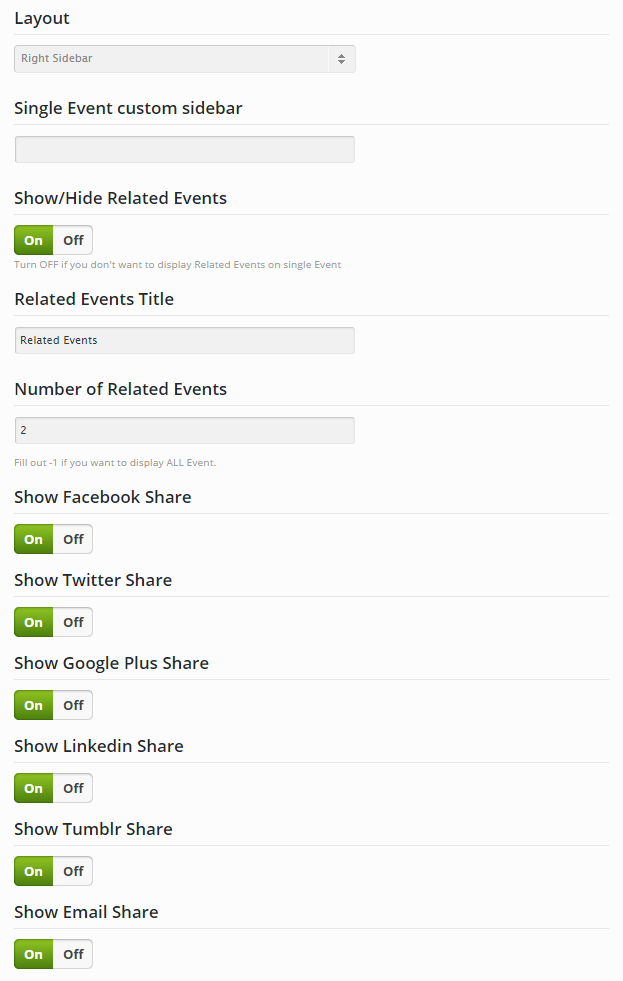
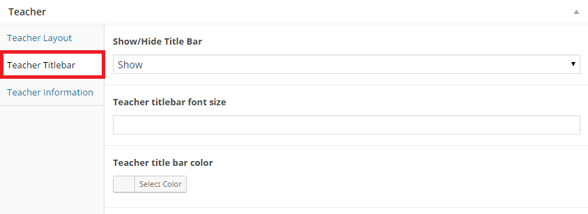

LINCOLN WordPress Theme
Detailed Documentation
- Created: January 07th, 2015
- Latest Update: January 28th 2015
- By: LunarTheme
- Email: admin@lunartheme.com
For support please check out our Lunartheme SUPPORT
INTRODUCTION
General
We would like to thank you for purchasing Lincoln! We are sure that you have made an excellent choice in selecting it. You also have agreed that this item is unique among tons of Premium WordPress themes. Before getting started, please make sure that you always check out our Lincoln WordPress Theme documentation files. We offer all kinds of useful information that you need to use for your purchased item. Besides, Knowledgebase, Articles, Forum Search in our Free support center are available for you to fully satisfy your questions. Thank you, we hope you enjoy our theme. Lincoln can only be used with WordPress and we assume that you already have WordPress installed and ready to go. If you do not, please follow the below WordPress information section to see our section on WordPress to help you get started.
WordPress information
To install this theme, you must have a working version of WordPress already installed. If you need help installing WordPress, follow the instructions in WordPress Codex. Below are all the useful links for WordPress users:

- WordPress general - General information about WordPress how to install it on your server.
- First steps with WordPress - A detailed document with many topics about how to begin WordPress.
- WordPress FAQs - Providing answers to the most popular questions about WordPress.
Requirement for Lincoln
To use Lincoln, your server must be running WordPress 4.3 or higher, PHP5.5 or higher, and mysql 5 or higher. Below is a list of items you should ensure your host can comply with.
- Please make sure that your server has the minimum requirements to run WordPress at least.
- Always check to ensure that you have updated the latest version of WordPress
- You can download the latest version of WordPress from offical WordPress from offical website.
- Always create secure passwords for FTP and Database
THEME INSTALLATION
To install Lincoln you must have a working version of WordPress already installed. Make sure your installed Wordpress version is 4.3 or higher. You also need to have PHP 5.5 or higher versions and MySQL 5.0 to function correctly. If you need help installing WordPress, follow the instructions in WordPress Codex
What's Included
When you purchase Lincoln, you need to download our theme package on from Themeforest.
Extract our full package, then you will see all the files and folders, including 02 .zip files and 03 folders. Below is a full list of everything that is included when you download our theme, along with a short description of each item.
- Lincoln.zip - This is the theme file you need to add to install theme
- Lincoln-child.zip - The child theme just for users who want to make code changes
- Plugins folder - Contains the necessary plugins used for Lincoln theme
- Revslider.zip - The Revolution Slider which creates beautiful image sliders for your site
- K-Teacher.zip - A plugin which enables Teacher page feature for theme
- K-Shortcodes.zip - A plugin which includes all shortcodes for theme which helps you build your own pages
- K-Project.zip - A plugin which enables Project feature for theme
- K-Gallery.zip - A plugin which enables Gallert feature for theme
- K-Event.zip - A plugin which enables Event feature for theme
- K-Course.zip - A plugin which enables Course feature for theme
- js_composer.zip - Visual Composer - the most popular page builder for WordPress
- Advanced-custom-fields-pro.zip - A graphic user interface layer for custom fields
- ACF-field-date-time-picker.zip - Allows you to add a Date and Time Picker field type
- Documentation folder - Contains the document providing you with basic guides to use Lincoln theme
- Sample data - Contains 01 revolution-slider folder and 01 .xlm file.
- Revolution-slider folder - Includes 03 .zip files. Those are all Revolution setting data
- Lincoln-wordpress-theme.xml - Includes all dummy data
How to Install Lincoln via WordPress
Following some steps below, you can completely install Lincoln in few minutes.
- Step 1: Login to your WordPress Admin
- Step 2: Go to Appearance >>> Themes >>> Add new
- Step 3: Click to Upload >>> Select installation files, choose Lincoln.zip.
- Step 4: Click Install now button and then wait while the theme uploaded and installed
- Step 5: Finally, click the Activate link
Common Theme Installation Errors
If you get the “Are You Sure You Want To Do This” message when installing Lincoln via WordPress, it means you have an upload file size limit. Install Lincoln via FTP if this happens, or call your hosting company and ask them to increase the limit.
2. Upload size limitIf you get this message when you install our theme on localhost, here is a solution for you:
- Through php.ini file
- Through function.php
- Through .htaccess method
Step 1 - Find the php.ini file on your host
Step 2 - Find the following lines and adjust the value. We suggest to change the upload file limit to 10M
You may add the below mentioned code in the functions.php file of your theme
@ini_set( 'post_max_size', '64M');
@ini_set( 'max_execution_time', '300' );
You may try modifying the existing .htaccess file in the root directory or creating a new one.
Add the following code in the existing or new htacess file:
php_value post_max_size 64M
php_value max_execution_time 300
php_value max_input_time 300
How to Install Lincoln via FTP
- Step 1 – Log into your hosting via an FTP software
- Step 2 – Unzip the Lincoln.zip file, and ONLY use the extracted Lincoln theme folder
- Step 3 – Upload the extracted Lincoln theme folder into /wp-content/themes/.
- Step 4 – Login to your WordPress Dashboard, go to Appearance >>>> Themes
- Step 5 – Click to Activate link to enable Lincoln theme
INSTALL DEMO DATA
There are also 02 different ways to help you import Lincoln demo content. However, each way has its own purposes which are worth noticing:
- Import All Demo Content: If you want to import OUR entire demo data using one click demo, all YOUR current data will be dissappeared. So, before implementing this step, start backup your database to ensure all the important information will be reserved.
- Manual Demo Import: If you choose to import manually some data from other websites, usually you have to import an XML file (called Sample Data and included in our package)
Please Note These Important Items about The Demo Content
Images - Our demo images are not included because they are licensed stock items that are not allowed to be shared. So, they will be modified by placeholders, you need to contact authors to get permission in case you want to use them in your commercial or non-commercial projects.
Below are the detailed guides for each method:
Import All Demo Content
The easiest way to import our demo content is to use our One Click Importer. To import our demo content, please see the steps below.
- Step 1: Login into your WordPress Dashboard
- Step 2: Go to Appearance >>> Theme Options
- Step 3: Scrolling to bottom, you will see a button One Click Install, click on that and confirm to install sample data.
- Step 4: Click to "Install base demo content"
- Step 5: An installing box will appear, check the box and click to "Start to import now"
- Step 6: The process of importing dummy content may take some minutes, so you don't interrupt/cancel the importing process.
- Step 7: Done! You can go to visit your site

Import Manual Demo Content
This is the second way for you to import our demo content. Continue reading below to learn how to manually import demo content.
Check The Following Plugins Before Import
- Visual Composer: The most popular page builder for WordPress
- Advanced Custom Fields Pro: A graphic user interface layer for custom fields
- K Shortcodes: A plugin which includes all shortcodes for theme which helps you build your own pages
That are required plugins to use this theme, besides there are some recommended plugins including Advanced Custom Fields: Date and Time Picker, Contact Form 7, Instagram Feed, K Courses, K Event, K Gallery, K Project, K Teacher, Revolution Slider, WooCommerce and YITH WooCommerce Wishlist
How to Install Plugins
Once you activate Lincoln, you will see a notification message to install and activate the required and recommended plugins
- Step 1: Click to Begin installing plugins
- Step 2: Select All the plugin >>> Install, then click to Apply
- Step 3: Click to Activate to enable the plugins you want to use
Where To Find Demo Files
But before moving straight to the point, there are some notes worth checking:
- Make sure you have installed all recommended plugins before importing sample data.
- In /Sample Data/ folder of our package, you can find 01 folder and 01 .xlm file which are:
- lincoln-wordpress-theme.xml All Data - sample demo data of some pages from our demo.
- revolution-slider.zip Revolution Slider Settings, including 03 .zip file which are home1.zip, home2.zip, home3.zip
- The import process may take several minutes due to large data and your server capacity. If your server setting "Max Execution Time" is too low, increase it (as your hosting provider). Please do not close the browser until it finishes. If it fails, you can run this process again until seeing the "Success Message".
Demo Images are not installed due to some copyrighted licenses - If you have to run the process more than once, menu items may be duplicated. Just go to Appearance > Menus and edit/delete Menu items
- Feature images are not imported (We use licensed photos on our demo page). Instead you will see placeholder images.
How To Import XML Files
To install sample data, please following these steps below:
- Step 0 - Make sure you have installed Lincoln theme and all required & recommended plugins
- Step 1 - Go to Tools >>> Import, then click to "WordPress" and wait until installation is finished
- Step 2 - If it is not yet installed before, you have to install it by clicking on Install Now
- Step 3 - After installed successfully, click on Activate Plugin & Run Importer
- Step 4 - When the installation is done, go ahead and click to "Choose File" button and import lincoln-wordpress-import.xml file. Don't cancel the importing process
- Step 5 - When you see the message "All done. Have fun!", you will know that the import process is done. Note: you may need to re-import the second time if the data is large.
- Step 6 - Done, then you have to set Homepage, Menu, Widgets for your site
And now you finished!
NOTE: You can get the .xml file by going to Tools >> Export >> Choose file and click "Download Export File". In the screenshot above, we have exported all content demo data. Then we got the file named "content-export.xml"
How To Import Revolution Slider
To install revolution slider, please following these steps below:
- Step 1: First, go to Revolution Slider >> Import Slider
- Step 2: Choose .zip file to upload and import. Click "Import Slider" to finish!
- Step 3: In case you want to export slider from a website, you can go to Revolution Slider. And then hover to the slide that you might want to export data. Click to the down arrow sign >> Export Slider

HOW TO
This is necessary steps for you to setup your site
Upload Logo & Favicon
1. Upload Logo
To upload your logo, you navigate to Theme Options. Please follow the below steps to upload your logo:
- Step 1: Login to your WordPress Dashboard
- Step 2: Go to Appearance >>> Theme Options >>> Header
- Step 3: After clicking to Header tab, you scroll to the bottom of page - Logo section and upload your logo. The logo size in our demo is 116x33px. Please use jpg, jpeg, png or gif image for best performance.
- Step 4: If you want to use Text logo, you turn ON and fill text you want to show, for example the name of your site
- Step 5: If you want to make retina logo, you can use a big logo (2x times your regular logo dimension.). The retina logo in our demo is 232x66px
- Step 6: There are also options to choose alignment of the logo, and adjust the left, top logo margins. This allows you to fine tune the placement of your logo.
- Step 7: Click to Save all changes and see them on front-end.
Note: If your logo is narrowed down in tiny shape
- (1) You can resize it by navigating to Appearance >> Theme Options >> Header >> Headers Section. Then move your mouse pointer to the space between two blocks. If the logo block was too small, you need to resize it until you satisfy with the result.
- (2) Also, don’t forget to adjust the padding size in “Logo Margin” of Theme Options. That is also the reason causing the logo’s narrowing. The final way to resolve this problem is to have some code knowledge to be able to edit the height of header section.
- (3) You can remove the max height limit by adding this code to Apperance >>> Theme Options >>> General >>> Custom CSS .k2t-logo, .k2t-logo img { max-height: inherit; max-width: inherit }
2. Upload Favicon
To upload your favion, you navigate to Theme Options. Please follow the below steps to upload favicon:
- Step 1: Go to Appearance >>> Theme Options >>> General
- Step 2: You scroll to the bottom of page - Icons section Favicon - Favicon is a small icon image at the topbar of your browser. The size should be a 16x16px or 32x2px Png/Gif image
- Step 2: You can upload icons for iphone, ipad
- Iphone icon - The iPhone icon is a file used for a web page icon on the iPhone. When someone bookmarks your web page or adds your web page to their home screen, this icon is used. If this file is not found, these products will use the screen shot of the web page, which often looks like no more than a white square.
- Iphone retina icon - The same as iPhone icon but for Retina iPhone.
- Ipad icon - The same as iPhone icon but for iPad.
- Ipad retina icon - The same as iPhone icon but for Retina iPad.
Menu Settings
1. How To Create A Menu
Follow the below steps to create a new menu:
- Step 1: Login to the WordPress Dashboard
- Step 2: Go to Appearance >>> Menus , then click to Create a new menu at the top of page
- Step 3: Enter the name for your menu in the Menu Name box
- Step 4: Click to Create Menu button
Your menu is created, now you can add pages for menu. Please follow the below steps
2. How To Add Pages To Your Menu
You can choose pages to add to your menu in Pages section in the left corner. Besides, you also can add posts, custom links or categories to menu
- Step 1: Click to Pages section in the left corner of Dashboard
- Step 2: Select the View All to see all published pages on your site
- Step 3: Select pages you want to add to menu by check the box and click to Add to Menu
- Step 4: If you want to add items to menu by using custom link, you click to Custom link, fill URL link and Link text, then click to Add to Menu
- Step 5: To create sub-menu of the parent menu, you just drag and drop items to the right side a distance compared with the parent menu
- Step 6: Click to Save menu button once you have added all items you want to menu.
- Step 7: You have to assign your menu to the location you want, please follow some steps below

3. How To Assign A Menu To a Location
After you have created a menu, you have to assign it to one of the pre-defined locations. Follow the below steps to assign a menu to a Location
- Step 1: Go to Appearance >>> Menus and click Manage Location
- Step 2: Assign each Theme Location wwith a menu, you can assign a menu to several Theme Locations
- Step 3: Click to Save Changes button
Menu is displayed on front-end
4. How To Create Mega Menu
Lincoln supports Mega menu feature. The Mega Menus are available for the first level items of menu in "Main Menu" area. Follow some steps below to create a mega menu:
- Step 1: Only first level items can enable the Mega Menu. Click the “arrow icon” next to any parent level menu item to expand the option box.
- Step 2: Check the box "Enable Mega Menu"
- Step 3: Select Yes to display the “Mega Menu Fullwidth”. Also choose "Mega Menu Position" such as Left or Right.
- Step 4: If using Mega menu background, click the “Upload Image” button to upload an image
- Step 5: Now you need to add child items for the first level item, like the image below
- Step 6: Now, you need to add child items for the second level items, like the image below
- Step 7: Click to Save Changes button
The mega menu on front-end should be dispayed like the below image:
Create Posts
1. How To Add A New Post
To create a new post, you follow the below steps:
- Step 1: Login to your WordPress Dashboard
- Step 2: Go to Posts >>> Add new post
- Step 3: Then, you enter your post title, contents in the text editor
- Step 4: You need to select post format, category and add tags
- Step 5: Upload a featured image for your post
- Step 6: Scroll down to Post options box, you will need to setup some options about layout, metadata, format. Please check Post options for more information
- Step 7: Click to Publish post
2. How To Add A Gallery Post
To create a gallery post, you follow the below steps:
- Step 1: Login to your WordPress Dashboard
- Step 2: Go to Posts >>> Add new post
- Step 3: Then, you enter your post title, contents in the text editor
- Step 4: You need to select "Gallery" post format, select category and add tags
- Step 6: Scroll down to Post options box, click to Post format tab, you will see Gallery format and some other options
- Step 7: CLick to Add to gallery to select and upload images you want to gallery
- Step 8: Setup some options for your gallery:
- Gallery format: add images, audio, video... from gallery.
- Gallery auto play: True or False. If you choose True, your gallery will play in auto. Default is False.
- Gallery duration time: fill duration time for your gallery. Default is 5000.
- Gallery speed: custom the speed. Default is 300.
- Gallery pagination: True or False. If you choose True, your gallery will be paginated. Default is False.
- Gallery navigation: True or False. If you choose True, your post will have gallery navigation. Default is True.
- Gallery mousewheel using: True or False. If you choose True, the gallery can be used by mousewheel. Default is True.
- Step 9: Upload a featured image for your post
- Step 10: Click to Publish post
- Step 11: When your post is published, it can be the below image:
3. How To Add A Video Post
To create a video post, you follow the below steps:
- Step 1: Login to your WordPress Dashboard
- Step 2: Go to Posts >>> Add new post
- Step 3: Then, you enter your post title, contents in the text editor
- Step 4: You need to select "Video" post format, select category and add tags
- Step 6: Scroll down to Post options box, click to Post format tab, you will see Video source and video format link
- Step 8: Setup some options for your video:
- Video source: Select video source: video link, upload local file, video embed code.
- Video format URL: You can only add link from Vimeo and Youtube
- Step 9: Upload a featured image for your post
- Step 10: Click to Publish post
- Step 11: When your post is published, it can be the below image:
4. How To Add An Audio Post
To create an audio post, you follow the below steps:
- Step 1: Login to your WordPress Dashboard
- Step 2: Go to Posts >>> Add new post
- Step 3: Then, you enter your post title, contents in the text editor
- Step 4: You need to select "Audio" post format, select category and add tags
- Step 6: Scroll down to Post options box, click to Post format tab, you will see Audio source and soundcloud format link
- Step 8: Setup some options for your audio:
- Audio source: Select audio source: soundcloud link or upload local file.
- Soundcloud format URL: Insert soundcloud link, or link audio from other websites (option for format "Link" only, please fill in full http:// address).
- Step 9: Upload a featured image for your post
- Step 10: Click to Publish post
- Step 11: When your post is published, it can be the below image:

5. How To Add A Quote Post
To create an quote post, you follow the below steps:
- Step 1: Login to your WordPress Dashboard
- Step 2: Go to Posts >>> Add new post
- Step 3: Then, you enter your post title, contents in the text editor
- Step 4: You need to select "Quote" post format, select category and add tags
- Step 6: Scroll down to Post options box, click to Post format tab, you will see Quote
- Step 8: Setup some options for your audio:
- Quote author: Fill the author name of the quote.
- Author quote URL: Add author link.
- Quote content: Fill the quote.
- Step 9: Upload a featured image for your post
- Step 10: Click to Publish post
- Step 11: When your post is published, it can be the below image:
Create Blog Page
1. How To Create A Blog Page
- Step 1: Login to your WordPress Admin
- Step 2: Go to Pages >>> Add new page
- Step 3: Enter title for your blog and select template for your blog in "page attribute"
- Step 4: Scroll to Page options, you will need to setup some options about layout, titlebar for your blog page. Please see Page options to know more details
- Page layout: You can select sidebar for your blog page including right sidebar, left sidebar. Besides, you can fill the name of custom sidebar you have created in Appearance >>> Widget, for example "cs-1", the "cs-1" stands for the first custom sidebar you have created
- Page titlebar: You can select show/hide titlebar. Please see Page options to know more details
- Blog: Allow you to select specific categories of posts for your blog page
- Step 5: Click to PUBLISH page

2. How To Setup Blog Page
To setup for your blog page, please go to Theme Options and follow the below steps. All the changes that have been made in this 'Blog' section of Theme Options will effect the entire website. That means if you make any adjustments in a certain page, it will overwrite options in Theme Options.
- Step 1: Login to your WordPress Admin
- Step 2: Go to Appearance >>> Theme Options
- Step 3: Click to Blog tab, you wwill see blog setting options
- Step 4: In Blog layout there will have options for you to setup layout, sidebar, style for blog
- Blog layout: Right sidebar, left sidebar or no sidebar
- Blog sidebar: Fill the name of sidebar you want to show (To create sidebar, you go to Appearance >>> Widget)
- Blog style: There are 4 styles icluding large, grid, masonry, medium.
- Step 5: Blog options
- Content or excerpt: select to display content or excerpt on the blog
- Excerpt length: The number of displayed excerpt words
- Infinite scroll: You can use Pagination number to navigate to the next page
- Title link: You can show or hide title link
- Post date: Enable to show published date information
- Comments: Show the number of comments
- Author: Show the name of author
- "Readmore" link: Show the readmore button
- Step 6: Finally, Save changes
- Step 7: When your blog page is published, it can as the below image


Front-end setttings
Setting Homepage
To create a homepage, please follow the below steps:
- Step 0: Make sure you created two new pages in WordPress (under Pages >>> Add new), and publish them. For the purpose of example, we’ll call these “Home” (for the front, or Home, page) and “Blog”.
- Step 1: Go to Settings >>> Reading in your WordPress Admin
- Step 2: Set "Front page displays" to a "Static Page"
- Step 3: In Front Page, choose a page which will be your homepage and select a page for posts page
- Step 4: Save changes
Sample Codes For Homepages
Here we provide you 04 demo pages, each comes with different style and purpose:
- 1. Homepage 1:
- 2. Homepage 2:
- 3. Homepage 3:
- 4. Homepage 4:
You can insert the following code into the back-end's visual section:
You can insert the following code into the back-end's visual section:
You can insert the following code into the back-end's visual section:
You can insert the following code into the back-end's visual section:
Below is an example of WordPress theme with direct instruction for every section. This captures some main components in contributing a web page:
- Secondary Menu: This might not be included in some web designs. But you can customize it by navigating to Appearance >> Theme Options >> Header. Then you navigate to "Top Header Section" and click "On" to activate it.
- Top Navigation Sidebar: You can see in this demo.
- Search: You can also add more icons to Top Navigation such as Text Editor, Social, Widgets, Canvas Sidebar, Woocommerce Cart, Logo, Custom Menu by navigating to Theme Options >> Header. Then scroll down to "Middle Header Section".
- Primary/Main Menu: In order to change all the title in the main menu, you can go to Appearance >> Menus. More information
- Logo: You can change logo by navigating Appearance >> Theme Options >> Header. Then scroll down to 'Logo' section. More information
- Revolution Slider: This section seperates the main body and the menu header. It is often focused because it is the most popular way to attract users by its flexible slider and appealing messages on that.
- Page Content:This section of a web page plays the most important role partly because it contains visual block, content, image, video, which are built by shortcodes in Visual composers or codes. It also occupies the largest part in a web page.
- Footer:Web page footer content most often conveys technical information. You can customize it by navigating to Theme Options >> Footer. More information
- Copyright text:This copyright text is in the footer of web page. You can go to Appearance >> Theme Options >> Footer. Then scroll down to the 'Footer copyright text'.
- Social Accounts: To customize all the social links in page bottom, you can go to Appearance >> Theme Options >> Social and then change the links.
Revolution Slider Settings
Below, we guide how to import revolution slider for your page, please follow some steps below:
- Step 0 - Make sure you have installed Lincoln theme and all recommended plugins, especially Revolution Slider
- Step 1 - Go to Revolution Slider >> Import Slider
- Step 2 - Choose .zip file to upload and import. Click "Import Slider" to finish!
In case you want to export slider from a website, you can go to Revolution Slider. And then hover to the slide that you might want to export data. Click to the down arrow sign >> Export Slider
Header Settings
Lincoln supports you with 03 header sections including top, middle (main) and bottom header. Below, we will guide you how to setup each header section. Please follow step by step:
1. Top Header Setup
Front-end setttings
To setup the top header, follow the steps below:
- Step 1: Login to your WordPress Admin
- Step 2: Navigate to Appearance >>> Theme Options and click to Header tab
- Step 3: Scroll to Header layout, you will see options for top, middle and bottom header section
- Step 4: Click ON to enable top header section
- Step 5: Click to symbol like the below image to create 02 columns, the max is 03 columns
- Step 6: Click to "+" to add elements, then you will see the box to choose elements. For our top header, we select "text editor"
- Step 7: Insert the below code in "text editor" box
- Step 8: For the second column, you come back "step 6" and do the same, but you need to select "login"
- Step 9: Save all changes
2. Main Header Setup
Front-end settings
Lincoln's main header includes logo, main menu, search and cart icons. After you have uploaded a logo and created menu, you will follow the below steps to complete main header settings
- Step 1: Login to your WordPress Admin
- Step 2: Navigate to Appearance >>> Theme Options and click to Header tab
- Step 3: Scroll to Header layout, you will see options for top, middle and bottom header section
- Step 4: Click ON to enable middle header section
- Step 5: Click to symbol like the below image to create 02 columns, the max is 03 columns
- Step 6: Click to "+" to add elements, then you will see the box to choose elements. You select logo for the first column, select menu, cart and search for the second column. Note: For menu, there are different menu options for you to select. All menus will be created in Appearance >>> Menus
- Step 7: You can drag and drop elements and change columns width freely.
- Step 8: Save all changes


3. Bottom Header Setup
You can enable the bottom header section or not, it depends on your demands. You can refer the above sections and do the same with the bottom header section
4. Sticky Header
Sticky menu on middle header
To use sticky header, you follow the below steps:
- Step 1: Login to your WordPress Admin
- Step 2: Navigate to Appearance >>> Theme Options and click to Header tab
- Step 3: Scroll to Header Settings, you will see options for sticky header
- Step 4: Select header section you want to fix. There are three options to select Sticky menu Sticky menu on top header, Sticky menu on middle header or Sticky menu on bottom header
- Step 5: Click to turn ON if you want to use Smart sticky menu: This is a superior of sticky menu. After you select the header section you want to retain, you turn ON to enable smart sticky menu. It will disappear when the user scrolls down the page and appear once scrolling up to the top of page.
- Step 6: Save all changes

5. Fullwidth Header
Header Fullwidth setttings
To use fullwidth header, you follow the below steps:
- Step 1: Login to your WordPress Admin
- Step 2: Navigate to Appearance >>> Theme Options and click to Header tab
- Step 3: Scroll to Header Layout, you will see options for Fullwidth header
- Step 4: Click to turn ON to enable fullwidth header
- Step 5: Save all changes
6. Header Settings and Back-up Options
Header Settings
You can set up background color, image, opacity, custom css in each of header section (top, middle or bottom), follow the below steps:
- Step 1: Login to your WordPress Admin
- Step 2: Navigate to Appearance >>> Theme Options and click to Header tab
- Step 3: Scroll to Header Layout, you will see options for header sections
- Step 4: Click to turn ON to enable header section you want to use
- Step 5: Click to "settings" symbol like the below image
- Step 6: Save all changes

Header Back-up Options
Lincoln supports you with header back-up options. This means you can backup your header settings before creating the new settings, in case you want to get the old header settings, you completely can import it again.
Follow the below steps, you will can back-up your header settings
- Step 1: Login to your WordPress Admin
- Step 2: Navigate to Appearance >>> Theme Options and click to Header tab
- Step 3: You will see Header Back-up Options. To back-up header, you click to Export Header, then enter the name of your backup and wait until you see a notification "Backup success"
- Step 4: To import the old header settings, you click Import Header
- Step 5: Select header file you export, then click Import now
- Step 6: Save all changes
Set Up Page Template
Lincoln provides you a great, number of sample pages and layout, which help you create an impressive website on your own:
- 1. About Our School:
- 2. Under Construction:
- 3. Contact Us
- 4. FAQ Page
You can insert the following code into the back-end's visual section:
You can insert the following code into the back-end's visual section:
You can insert the following code into the back-end's visual section:
You can insert the following code into the back-end's visual section:
Set Up WooCommerce
1. How To Create Your Products
- Step 0: Make sure that you have installed WooCommerce plugin
- Step 1: In the dashboard, navigate to Product >>> Add new product. Enter a name for your product.
- Step 2: Write the product description into the post content field, this will be all the product information.
- Step 3: You enter the product information price, SKU, shipping, and more) into the “Product Data”.
- Step 4: The “Product Short Description” permit you to write the short information about product.
- Step 5: Set “Featured Image” in the right sidebar.
- Step 6: When all manipulations are finished, click “Publish” to show on your product.
Single Product on Front-end
2. How To Create A Shop Page in Lincoln
- Step 1: Go to Pages >>> Add new page, then enter the name of page, for example "shop" and publish it
- Step 2: Go to WooCommerce >>> Settings in your Dashbroad
- Step 2: Click on “Product” tab. This includes 'General', 'Display', 'Inventory', 'Downloadable Products'.
- Step 3: Click on "Display" tab, you will see "shop page" option, select "shop" page from drop down menu
- Step 4: Back to the shop page and set “Featured Image” in the right sidebar.
- Step 5: Save all changes to show on your main shop page.
- Step 1: Go to Appearance >>> Theme options
- Step 2: Click to Woocommerce tab. You can see options for single product and product page
- Step 3: In Shop Achieve of WooCommerce Theme Option, you can choose 3 layouts: Right Sidebar, No Sidebar or Left Sidebar
- Step 4: Turn on/turn off the product softing and the number of results per page.
- Step 5: Set number of Columns for products, we set it 4 as default. You can change it with different quantity.
- Step 6: You can custom the number of products per page to tailor your need. Also, type -1 if you want to display all products.
- Step 7: Titlebar: You can custom anything about titblebar of shop achieve.
- Step 8: Save all changes
- Step 1: Go to Appearance >>> Theme options
- Step 2: Click to Woocommerce tab. You can see options for single product
- Step 3: In Single product of WooCommerce Theme Option, you can customize your single product page with 3 layouts: Right sidebar, Left sidebar and No sidebar
- Step 4: You can show/hide (turn on/turn off) the related products in every single product page.
- Step 5: In detail, you can select the number of columns to show related products w.
- Step 6: Titblebar: You can custom anything about titblebar of shop single product.

3. How To Set Up Your Own Shop Page
4. How To Set Up Single Product Page
FEATURES
Theme Options
To customize the appearance of your site, you go to Appearance >>> Theme Options to configure. Below is the detail of how to use those functions.
General
- Step 1: Navigate to Appearance >>> Theme Options >>>General.
- Step 2: Show or Hide Breadcrumb.
- Step 3: Show or Hide place holder (just for single posts). Choose to show the place holder if you have no uploaded images on your site
- Step 3: You can customize sidebar width
- Step 4: For Header code, Footer Code, custom CSS you can enter custom CSS or fill Google Analytics tracking code.
- Step 5: Finally, Save changes
Icons
- Favicon - Favicon is a small icon image at the topbar of your browser.
- Iphone icon - The iPhone icon is a file used for a web page icon on the iPhone. When someone bookmarks your web page or adds your web page to their home screen, this icon is used. If this file is not found, these products will use the screen shot of the web page, which often looks like no more than a white square.
- Iphone retina icon - The same as iPhone icon but for Retina iPhone.
- Ipad icon - The same as iPhone icon but for iPad.
- Ipad retina icon - The same as iPhone icon but for Retina iPad.
Offcanvas Sidebar
To setup Offcanvas Sidebar, Follow the steps below:
- Step 1: Navigate to Appearance >>> Theme Options >>> Offcanvas sidebar.
- Step 2: Check ON to show Offcanvas. Select the offcanvas sidebar position (left or right) and choose one of the sidebars you have created in Appearance >>> Widgets. For example "cs-4" sidebar. The "cs-4" stands for "the fourth custom sidebar" you create. More details, you can see Sidebar section.
- Step 3: Besides, Lincoln allows you to select Offcanvas sidebar background image, background repeat (No repeat, Repeat X, Repeat Y), background size (Auto, cover, contain), background color, text color, custom css.
Front-end: This offcanvas sidebar is placed at the right of page
Layout
- Step 1: Navigate to Appearance >>> Theme Options >>>Layout.
- Step 2: Layout tab in theme options is where you can customize content width. You can choose content width in the range from 940px to 1200px.
- Step 3: Finally, Save changes
- You can select titlebar layout (Justify or Center).
- Enter Page titlebar top padding, bottom padding, choose background image or color, position (Left Top, Left Center, Left Bottom, Right Top, Right Center, Right Bottom, Center Top, Center Center, Center Bottom).
- Check ON to turn background parallax, customize titlebar shadow opacity, titlebar overplay cpacity, titlebar clipmask opacity according to percentage.
- Enter titlebar custom content.
Front-end setting
Style
- Step 1: Navigate to Appearance >>> Theme Options >>>Style.
- Step 2: Primary color: Select color for site in primary color (main color), select color for heading and text.
- Step 3: Link color: You can select color for link, link hover, footer text and footer link.
- Step 4: Menu color: You can set color for main menu and submenu.
- Step 5: Finally, Save changes
Default is blue #3F51B5 is the background color of Secondary Menu bar
Footer text color: Default the color of footer text is #959595
Typography
- Step 1: Navigate to Appearance >>> Theme Options >>>Typography.
- Step 2: You can choose a normal font or Google font for Navigation, Heading and Body.
- Font Family
- Headings Font Size
- General Font size
- Font Type
- Step 3: Finally, Save changes
In this section, you can customize Font size for Heading types or Body.

Blog
All the changes that have been made in this 'Blog' section of Theme Options will effect the entire website. That means if you make any adjustments in a certain page, it will overwrite options in Theme Options.
- Step 1: Navigate to Appearance >>> Theme Options >>>Blog.
- Step 2: Set up for blog layout
- Blog layout: Right sidebar, left sidebar or no sidebar
- Blog sidebar: Fill the name of sidebar you want to show (To create sidebar, you go to Appearance >>> Widget)
- Blog style: There are 4 styles icluding large, grid, masonry, medium.
- Step 3: Blog options
- Content or excerpt: select to display content or excerpt on the blog
- Excerpt length: The number of displayed excerpt words
- Infinite scroll: You can use Pagination number to navigate to the next page
- Title link: You can show or hide title link
- Post date: Enable to show published date information
- Comments: Show the number of comments
- Author: Show the name of author
- "Readmore" link: Show the readmore button
- Step 4: Finally, Save changes

Blog page
Front-end setttings
Single
NOTE: Similar to the 'Blog' section, all the changes that have been made in this 'Single' section of Theme Options will effect the entire website. That means if you make any adjustments in a certain page, it will overwrite options in Theme Options.
- Step 1: Navigate to Appearance >>> Theme Options >>>Single.
- Step 2: Select single layout such as right sidebar, left sidebar or no sidebar. Right sidebar will be selected by default.
- Single post layout: You can choose right sidebar, left sidebar or no sidebar
- Single custom sidebar: Enter the name of sidebar you have created in Appearance >>> Widgets. For example, "secondary-sidebar"
- Step 3: Set up meta information
- Social share: Turn ON to show Facebook, Twitter, Google Plus, Linkedin, Tumblr, Email on single post
- Tags: Turn ON to show tags on single post
- Comment number: Turn ON to show the number of comments
- Previous/Next link: Turn ON to show post navigation link
- Author box: Turn ON to show Author box information
- Related post: Turn ON to show related post on single post
- Related post title: Fill in the name of related posts, for example "You may also like"
- Number of related post: Fill in the number of related posts you want to show, for example "3". In case you want to show all related posts, you enter "-1"
- Comment form: Turn ON to show comment form on single post
- Step 4: Finally, Save changes
Front-end settings
Project
NOTE: All the changes that have been made in this 'Project' section of Theme Options will effect the entire website. That means if you make any adjustments in a certain page, it will overwrite options in Theme Options.
- Step 1: Navigate to Appearance >>> Theme Options >>>Project.
- Step 2: Project category slug: The “slug” is the URL-friendly version of the name. It is usually all lowercase and contains only letters, numbers, and hyphens.
- Front-end
- Step 3: Set up Titlebar

You can show or hide titlebar of project page.
In case, you turn ON to show titlebar, but it isn't displayed, you will have to go to the project page editor, scroll to "page options" and select to show titlebar like the below image.

Front-end

Single Project
NOTE: All the changes that have been made in this 'Single Project' section of Theme Options will effect the entire website. That means if you make any adjustments in a certain page, it will overwrite options in Theme Options.
- Step 1: Navigate to Appearance >>> Theme Options >>> Single Project.
- Step 2: Project slug: The “slug” is the URL-friendly version of the name. It is usually all lowercase and contains only letters, numbers, and hyphens.

Single Event
NOTE: All the changes that have been made in this 'Single Event' section of Theme Options will effect the entire website. That means if you make any adjustments in a certain page, it will overwrite options in Theme Options.
- Step 1: Navigate to Appearance >>> Theme Options >>> Single event.
- Step 2: Event slug: The “slug” is the URL-friendly version of the name. It is usually all lowercase and contains only letters, numbers, and hyphens.
- Front-end
- Step 3: Set up other information on single event page
- Layout: You can choose right sidebar, left sidebar, no sidebar
- Custom sidebar: Fill in the name of custom sidebar you have created
- Related events: Show or hide related events on single event page
- Related events title: Fill in the name of related events you want
- Number of Related events: The number of related events you want to show on single page, for example "2", in case you want to display ALL events, fill in "-1"
- Social share: Turn ON to show Facebook, Twitter, Google plus, Linkedin, Tumblr, Email
- Front-end
- Step 4: Set up titlebar


NOTE: In order that the background image is displayed well on the various layouts of theme, the presequite dimension of images has to be larger than 1920x260px.
Teacher
NOTE: All the changes that have been made in this 'Teacher' section of Theme Options will effect the entire website. That means if you make any adjustments in a certain page, it will overwrite options in Theme Options.
- Step 1: Navigate to Appearance >>> Theme Options >>> Teacher.
- Step 2: Teacher slug: The “slug” is the URL-friendly version of the name. It is usually all lowercase and contains only letters, numbers, and hyphens.
- Front-end
- Step 3: Set up other information on teacher single page
- Column: You can choose 2 columns, 3 columns, 4 columns
- Excerpt length: The number of excerpt words you want to show
- Layout: You can choose Right sidebar, Left sidebar or No sidebar
- Custom sidebar: Fill in the name of custome sidebar you have created
- Step 4: Set up titlebar

Course
NOTE: All the changes that have been made in this 'Course' section of Theme Options will effect the entire website. That means if you make any adjustments in a certain page, it will overwrite options in Theme Options.
- Step 1: Navigate to Appearance >>> Theme Options >>> Course.
- Step 2: Course category slug: The “slug” is the URL-friendly version of the category name. It is usually all lowercase and contains only letters, numbers, and hyphens.
- Step 3: Course tag slug: The “slug” is the URL-friendly version of the tag name. It is usually all lowercase and contains only letters, numbers, and hyphens.
- Front-end
- Step 4: Set up titlebar


Single course
NOTE: All the changes that have been made in this 'Single course' section of Theme Options will effect the entire website. That means if you make any adjustments in a certain page, it will overwrite options in Theme Options.
- Step 1: Navigate to Appearance >>> Theme Options >>> Single Course.
- Step 2: Course slug: The “slug” is the URL-friendly version of the name. It is usually all lowercase and contains only letters, numbers, and hyphens.
- Front-end
- Step 3: Set up other information on single course page
- Layout: You can choose right sidebar, left sidebar, no sidebar
- Custom sidebar: Fill in the name of custome sidebar you have created
- Related course: Turn ON to show related courses on single course
- Related course title: Fill in the name of related course title you want
- Social share: Turn ON to show Facebook, Twitter, Google plus, Linkedin, Tumblr, Email
- Front-end
- Step 4: Set up titlebar


WooCommerce
You can go to Shop to know more about Woocommerce customization.
404 Page
You can enter 404 Title, custom text, upload 404 image you want to show when users go to 404 page. Check ON to display subcribe newsletter form. But you need to install newsletter plugin.
Social
- Step 1: Navigate to Appearance >>> Theme Options >>>Social.
- Step 2: Social Tab in Theme Options is where you will insert your custom social media links you want to display. If you want to display Facebook icon, Twitter icon or Google+ icon in header or footer you need to insert the URL of your Facebook, Twitter, Google+ in the corresponding field.
- Step 3: To display icon title when you hover icons, you only need to turn On in the icon title field.
Backup Options
- Backup and Restore Options: You can use two buttons below to back up your current options, and then restore it back at a later time. This is useful if you want to experiment on the options but would like to keep the old settings in case you need to get it back.
- Transfer Theme Options Data: You can tranfer all the saved options data between different installations by copying the text inside the text box. To import data from another installation, replace the data in the text box with the one from another installation and click "Import Options".
Page Options
Page Layout
- Page Layout: There are 3 page layout styles which are Right, Left and No Sidebar.
- Custom Sidebar: Fill in the name of custom sidebar you have created in Appearance >>> Widgets.
- Page sidebar width: Customize width of sidebar. The measuring unit is %
- Top padding of content: Set the measurement of top padding for layout.
- Bottom padding of content: Set the measurement of top padding for layout.
Page Title Bar
Page Titlebar: If you don't want to fill in the title name above, you can customize your page titlebar here. Beside some simply options, you can notice some special options in Grid:
- Title bar: Show or hide title bar. Default is show.
- Titlebar layout: Choose from justify or center for alignment of elements on titlebar.
- Titlebar font size: Set the size of your text in title area.
- Top Padding and Bottom Padding: It is a line at the top or bottom of your title area, which is different from padding of content.
- Background image: select image from "Media" or your computer. The size of image should be 1920x300px. Set your background image position among 9 available positions.
- Background color: Set your color in title area
- Background image position: set the position of image background from position list. Default is left top.
- Background zoom effect: True or False. If you choose True, your background will have zoom effect. Otherwise, set False. Default is False.
- Background parallax: True or False. If you choose True, your background will have nice paralax effect in title bar.
- Title opacity: adjust the opacity of titlebar
- Shadow opacity: Shadow makes a dark area for titlebar here, highlighting your titlebar name. This is the setting to adjust the opacity of titlebar
- Overlay opacity: An effect cover the surface of titlebar area with a coating. This is the setting to adjust the opacity of overlay
- Clipmask opacity: This is the setting to adjust opacity of clipmask, an effect cleaves scope of title into small squares.
- Custom title content: You can create your content for title area instead of filling the title name above, which is the same as customizing post content: you can add image, media or using shortcodes.
Blog
You can select a specific category of posts for page. This feature only supports for blog page template
Post Options
Post Layout
- Post Layout: There are 3 post layout styles which are Right, Left and No Sidebar. Default is right sidebar
- Custom Sidebar: Fill in the name of custom sidebar you have created in Appearance >>> Widgets.
Post Metadata
- Show/hide tags: Select if you want to show or hide tags. Default is to show tags
- Show/hide authorbox: Select if you want to show or hide authorbox
- Show/hide related post: Select if you want to show or hide related post
Post Format
Customize Post format if you choose one of these formats "video, audio, link, quote, gallery":
- For format "video", you have some options:
- Video format url: you can only add link from Vimeo and Youtube
- Video source: select video source: video link, upload local file, video embed code.
- For format "audio", you have some options:
- Audio source: select audio source: soundcloud link or upload local file.
- Link: insert soundcloud link, or link audio from other websites (option for format "Link" only, please fill in full http:// address).
- For format "quote", you have some options:
- Quote author: fill the author name of the quote.
- Author quote url: add author link.
- Quote content: fill the quote.
- For format "gallery", you have some options:
- Gallery format: add images, audio, video... from gallery.
- Gallery auto play: True or False. If you choose True, your gallery will play in auto. Default is False.
- Gallery duration time: fill duration time for your gallery. Default is 5000.
- Gallery speed: custom the speed. Default is 300.
- Gallery pagination: True or False. If you choose True, your gallery will be paginated. Default is False.
- Gallery navigation: True or False. If you choose True, your post will have gallery navigation. Default is True.
- Gallery mousewheel using: True or False. If you choose True, the gallery can be used by mousewheel. Default is True.
Row (Visual Composer)
You can use row to add elements, shortcodes and buil your own pages

- Step 1: Navigate to Pages >> Add New Page >> Backend Editor.
- Step 2: You can choose Add Element to add new row.
- Step 3: Lincoln supports you a lot in customizing the row settings. You can set background for the row by selecting background type including background color, image, video.
- For Background image: You only upload the image you want to set background, after then setting background position, size, animation, repeat. Besides, if you want to parallax effect for background you only check to box, or create mask layer image by uploading an image file and set the attributes of image.
- For Background video: You can insert Youtube link and customize opacity, starting time, quality and the other attributes by selecting "Use Background video?" and fill in the video link..
- Step 4: In design options tab, this theme supports you in adjusting margin, border and padding. You will fill in the size you want to (unit: pixel) and set color for border.


K-Course Plugin
If you want to create a single course custom post type on your website with Lincoln, first of all, you need to install our K-Course plugin. The installation file can be found in the /Plugins/ folder in our full download package. After installed, you will see K-Course in the left menu panel.
1. Create a Single Course
- Step 1: Go to K-Course >>> Add New Course
- Step 2: Enter course title, description
- Step 3: Scroll down Course settings to enter other necessary information
- Course Layout
Course Layout: Select "Default" to use settings in Course Settings area. If you do not choose “Default”, page will be formatted with “Left” sidebar , “Right” sidebar or no sidebar (“Hidden“). Custom Sidebar name: Note, you will have to fill in "cs-1" or "cs-2" instead of sidebar name in this field, "cs-1" or "cs-2" stands for "the first custom sidebar" or "the second custom sidebar" you have created in Appearance >>> Widgets. But first you need to install the “Custom Sidebar” plugin from WPMU DEV in order to support you change the custom sidebar name. - Course information
Start Date: Course's start date. Course ID: Course’s ID. It should be unique to identify each seperated course. Product: Select a WooCommerce product to sell this course. It requires WooCommerce plugin to be installed and there are some products to choose. See WooCommerce section to learn more about creating products. Address: Location Address of course Duration : Course duration information. For example: one week, two weeks Who are instructors : There are 02 options for you which are teacher and outsource. To choose teacher, firstly you need to create a single teacher post information by our K-Teachers Plugins. Then back to this, when you choose "Teacher", it will appear the teacher that you might want to select. To choose 'Outsource', all you need to do is to fill all the information in the table down below when you select it. Teacher: Choose from teachers. It requires K-Teacher plugin to be installed and there needs to be filled with some members to choose. See K-Teacher plugin to learn more about managing members Credit: Enter the number of credits need to learn in the registration course Subscribe URL: Create a link to a subscribe form. If it is empty, button is invisible Subscribe Button Text: Text that appears on the subscribe button Download: Create material link downloads for student training. - Course Titlebar: You can custom anything about title bar of the course from name of titlebar to the size or background etc.
- Excerpt: The brief introduction about course.
Front-end settings
2. Single course settings
- Step 1: Navigate to Appearance >>> Theme Options >>> Single Course.
- Step 2: Course slug: The “slug” is the URL-friendly version of the name. It is usually all lowercase and contains only letters, numbers, and hyphens.
- Front-end
- Step 3: Set up other information on single course page
- Layout: You can choose right sidebar, left sidebar, no sidebar
- Custom sidebar: Fill in the name of custome sidebar you have created
- Related course: Turn ON to show related courses on single course
- Related course title: Fill in the name of related course title you want
- Social share: Turn ON to show Facebook, Twitter, Google plus, Linkedin, Tumblr, Email
- Front-end
- Step 4: Set up titlebar


3. Create a Course Listing page
Courses Listing page will be defined by using our K-Course Listing Shortcodes in Visual Composer.
- Step 1: Go to Page >>> Add new page
- Step 2: To create a Course Listing, we use K-Course Listing Shortcodes
- Step 3: Start to set up Course listing
- Course Listing Style: Including Grid style (the posts will be displayed in Grid format) and Classic Style (the posts will be displayed in Listing format)
- Grid Columns: Choose the number of columns you want (just for grid style): 2 columns, 3 columns, 4 columns.
- Show/Hide Filter: You can Show or Hide filter of course listing.
- Course Per Page: Number of Courses are displayed on each page.
- Show/Hide Datetime: Show or Hide date/time displed on course.
- Show text or price on apply button: Show text "Apply" or show the price of course
- Show/Hide Pagination: Show or Hide the pagination of the page.
- Enable Animation: Check the box to enable animation
- ID: Type the unique ID to identify this shortcode. It is optional.
- Class: Add Class to run css/jss. It is optional
- Step 4: Save changes
See front-end settings

4. K-Course Setting Page
- Step 1: You need to navigate to Appearance >> Theme Options >> Course
- Step 2: Course category slug: The “slug” is the URL-friendly version of the category name. It is usually all lowercase and contains only letters, numbers, and hyphens.
- Step 3: Course tag slug: The “slug” is the URL-friendly version of the tag name. It is usually all lowercase and contains only letters, numbers, and hyphens.
- Front-end
- Step 4: Set up titlebar
- Step 5: Save changes


5. Course Detail With Pricing
To sell an Course, WooCommerce plugin must be installed. See WooCommerce section for more information.
- Step 1: Go to Product >>> Add new
- Step 2: Enter information for course
- SKU: a Stock-keeping unit
- Regular price: The price of course
- Sale price: The discount price of course
- Related courses: The courses is in the similar category
- Step 3: Upload featured product image
- Step 4: Click to PUBLISH
- Step 5: Come back to "single course" you have created to sell course, after that you scrolling to Course settings >>> Course information to enter necessary information

Front-end settings
K-Event plugin
If you want to create an single event, first of all, you need to install our K-Event plugin. The installation file can be found in the /Plugin Files/ folder of the download package or in our recommended plugins notification when you successfully installed Lincoln theme. After finishing the installation, you will see K-Event in the left menu panel.
1. Create an Event
To create an event, please follow the below steps:
- Step 1: Go to K-Event >>>> Add New Event
- Step 2: Enter event title, description and other information
- Step 3: Select category for your event. To create a new category, go to K-Event >>> K-Event categories
- Step 4: Select tags for your event. To create a new tag, go to K-Event >>> K-Event tags
- Step 5: Set a featured image for the event
- Step 6: Scroll to Event Settings. There will have options for layout, information, location, titlebar
- Event Layout
- Event Layout: Select "Default" to use settings in Course Settings area. If you do not choose “Default”, page will be formatted with “Left” sidebar , “Right” sidebar or no sidebar (“Hidden“).
- Custom Sidebar name: Note, you will have to fill in "cs-1" or "cs-2" instead of sidebar name in this field, "cs-1" or "cs-2" stands for "the first custom sidebar" or "the second custom sidebar" you have created in Appearance >>> Widgets. But first you need to install the “Custom Sidebar” plugin from WPMU DEV in order to support you change the custom sidebar name.
 - Event Information
- Start Date: Event Start Date & Time
- End date: Event End Date & Time
- Event ID: Event ID should be unique. It will be displayed on Teacher details page
- Front-end settings
- Color: Select color you want for the Event Calendar.
- Product: Select a WooCommerce product to sell this event. It requires WooCommerce plugin to be installed and there are some products to choose. See WooCommerce section to learn more about creating products. It is optional to link a product to an event. If you do not to use WooCommerce, just enter Subscribe URL for visitors to subscribe the events
- Who are speakers: There are 02 options for you which are inschool teacher and outsourse teacher.
- Teacher: Choose from teachers. It requires K-Teacher plugin to be installed and there needs to be filled with some members to choose. See K-Teacher Plugin to learn more about managing members
- Subscribe URL: Link to a subscribe form. Only work if no product is set.
- Subscribe Button Text: Text that appears on the subscribe button
- Front-end settings
- Event Location
- Address: Enter Location Address of Event
- Phone: Enter Contact Number of event
- Website: Enter Website URL of event
- Email: Enter Email Contact of event
- Front-end settings
- K-Event Titlebar: You can custom anything related titlebar of event post type. Front-end settings
2. Single Event settings
- Step 1: Navigate to Appearance >>> Theme Options >>> Single Event.
- Step 2: Event slug: The “slug” is the URL-friendly version of the name. It is usually all lowercase and contains only letters, numbers, and hyphens.
- Front-end
- Step 3: Set up other information on single course page
- Layout: You can choose right sidebar, left sidebar, no sidebar
- Custom sidebar: Fill in the name of custome sidebar you have created
- Related event: Turn ON to show related events on single event
- Related event title: Fill in the name of related event title you want
- Number of related events: Fill the number of related events you want to show, fill out -1 if you want to display ALL Event.
- Social share: Turn ON to show Facebook, Twitter, Google plus, Linkedin, Tumblr, Email
- Front-end
- Step 4: Set up titlebar
3. Create An Event Listing Page
Event Listing page will be defined by using our K-Event Listing Shortcodes in Visual Composer.
- Step 1: Go to Page >>> Add new page
- Step 2: To create A Event Listing, we use K-Event Listing Shortcodes
- Step 3: Start to set up Event listing
- Event Listing Style: Including Calendar 1, Calendar 2, Grid, Classic, Carousel.
- Grid Columns: If you select Grid style, there will have options for you to choose the number of columns you want (just for grid style): 2 columns, 3 columns, 4 columns.
- Show/Hide Filter: You can Show or Hide filter of event listing. (just for grid style)
- Event Per Page: Number of Events are displayed on each page.
- Show/Hide Pagination: Show or Hide the pagination of the page.
- Enable Animation: Check the box to enable animation
- ID: Type the unique ID to identify this shortcode. It is optional.
- Class: Add Class to run css/jss. It is optional
- Step 4: Save changes


Event Grid Listing
See other Event pages
4. Event Listing Settings
If you want to change event page's setting, you need to navigate to Appearance >> Theme Options >> Event and continue to make changes in there.
- Step 1: You need to navigate to Appearance >> Theme Options >> Event
- Step 2: Event category slug: The “slug” is the URL-friendly version of the category name. It is usually all lowercase and contains only letters, numbers, and hyphens.
- Step 3: Event tag slug: The “slug” is the URL-friendly version of the tag name. It is usually all lowercase and contains only letters, numbers, and hyphens.
- Step 4: Set up titlebar
- Step 5: Save changes
5. Event Details With Pricing
To sell an Course, WooCommerce plugin must be installed. See WooCommerce section for more information.
- Step 1: Go to Product >>> Add new
- Step 2: Enter information for event
- SKU: a Stock-keeping unit
- Regular price: The price of event
- Sale price: The discount price of event
- Related courses/events: The event is in the similar category
- Step 3: Upload featured product image
- Step 4: Click to PUBLISH
- Step 5: Come back to "single event" you have created to sell event, after that you scrolling to Event settings >>> Event information to enter necessary information


Front-end settings

K-Teacher Plugin
1. Add a Teacher/Member
- Go to K-Teacher >> Add New Teacher/Member
- Enter Member Title (Name), Description and other information.
- Upload featured image for teacher/member
- Scroll to Teacher settings, you will see options for teacher layout, titlebar, information
- Teacher Layout
- Teacher Layout: Select "Default" to use settings in Teacher Settings page. If you do not choose “Default”, page will be formatted with “Left” sidebar , “Right” sidebar or no sidebar (“Hidden“)
- Custom Sidebar name: Note, you will have to fill in "cs-1" or "cs-2" instead of sidebar name in this field, "cs-1" or "cs-2" stands for "the first custom sidebar" or "the second custom sidebar" you have created in Appearance >>> Widgets. But first you need to install the “Custom Sidebar” plugin from WPMU DEV in order to support you change the custom sidebar name.
- Teacher Titlebar: You can customize anything related to titlebar of K-Teacher post type.
- Show/hide titlebar: You can select show or hide titlebar
- Teacher Titlebar font size: Fill font size for titlebar title
- Teacher Titlebar color: Select color or enter color code for titlebar title
 - Teacher Information:
- Position: Position/Title of member. For example Senior speaker
- Subjects: All the subject that the teacher is taking charge of.
- Facebook: Enter full link to member Facebook profile page
- Instagram: Enter full link to member Instagram profile page
- Email: Enter full link to member Email profile page
- Twitter: Enter full link to member Twitter profile page
- LinkedIn: Enter full link to member LinkedIn profile page
- Tumblr: Enter full link to member Tumblr profile page
- Google Plus: Enter full link to member Google Plus profile page
- Excerpt: the brief introduction about Teacher/Member
- Click PUBLISH your teacher/member page
Front-end settings
2. Create Teacher Listing Page
Teacher Listing page will be defined by using our K-Teacher Listing Shortcodes in Visual Composer. Follow the below steps to know more information:
- Step 1: Go to Pages >>> Add new page
- Step 2: Click to Backend editor, then click Add elements
- Step 3: Select K-Teacher Listing shortcode
- To create an Teacher No Filter Listing Page, we use K-Teacher Listing Shortcodes and choose Classic or Shadow Box options and fill in other related information to complete.
- Teacher Listing Style: There are 2 options for you to choose which are Classic and Shadow Box.
- Teacher Columns: Choose the number of columns you want.
- Teacher Per Page: Number of Teacher details for each page.
- Show/Hide Excerpt: Show or Hide the excerpt of the page.
- Excerpt length: The number of excerpt words are displayed
- ID: Type the unique ID to identify this shortcode. It is optional.
- Class: Add Class to run css/jss. It is optional.
- To create an Teacher With Filter Listing Page, we use K-Teacher Listing Shortcodes, then choose Classic or Shadow Box options and fill in other related information to complete.
- Just like Teacher with no Filter page, in order to show Teacher Listing with Filter bar, first of all you will need to choose "K-Teacher Listing" shortcodes. Then, to show the Filter Bar in Titlebar like in our demo, you have to go to Page Titlebar on Page Options.
Finally, you have to type our K-Teacher Filter Listing in Custom Titlebar Content like the image below to show the Filter bar like Demo.
- Step 4: Click PUBLISH Teacher listing page
For example: Create Teacher No Filter Listing Page
In this K Teacher Listing Settings shortcode, all the parameters include:
For example: Create Teacher With Filter Listing Page
Teacher Listing With Filter and Shadow Box on Front-end
Teacher Listing No Filter Wih Classic Style on Front-end
3. Set Up Teacher Listing Page
If you want to change member page's setting, you need to navigate to Appearance >> Theme Options >> Teacher and continue to make changes in there.
- Teacher Setting
- Teacher Slug: Change teacher's slug. Remember to save the permalink settings again in Settings > Permalinks. By default, a member will have URL like this http://yourdomain.com/member/a-single-member-slug. If you enter speaker here, URL of member will be like this http://yourdomain.com/speaker/a-single-member-slug. In addition, the members listing page will be http://yourdomain.com/speaker instead of http://yourdomain.com/member
- Column: Custom the number of column in the teacher listing page.
- Excerpt Length: Change the number of content will appear in the teacher listing page
- Teacher Single:
- Layout: You can change the layout of teacher single post type with options like Right, Left, No sidebar
- Single Teacher custom sidebar: You can fill in the custom sidebar name that you created in Apprearance >> Widget to enable the custom sidebar in single teacher post
- Titlebar:
You can choose default layout for page titlebar of teacher single post type. This setting can be overridden in each member.
K-Project plugin
1. Add a Project
- Go to K-Project > Add New Project
- Enter Project Title, Description and other information
- Select categories, tags for your project
- Upload featured image for your project
- Scroll to Project options, you will see options for project layout and project information
- Project Layout: In the project sidebar content, select "True" to enable sidebar or "False" to disable the sidebar.
- Project Information (Metadata): Metadata is set in K-Project Settings > Default Metadata. You can also add new metadata here.
- Project size: You can select size for your single project including small, horizontal, vertical, big
- Project member: You can enter the name of member you have created in K-Teacher
- Show/hide meta: Select if you want to show/hide meta box at the right side of single project
- Meta Client: Fill the name of your client
- Meta Work: Fill the name of project
- Meta Start Date: The date your project is started
- Meta End Date: The date your project is ended
- Meta Website: Fill the website name of project
- Meta Website Link: Fill the website link of project
- Meta Text Link button:Fill the name of link button you want
- Meta Link button: Enter link of button
- Excerpt: the brief introduction about Project
- CLick PUBLISH your project
Project Details on Front-end
2. Set Up Single Project
NOTE: All the changes that have been made in this 'Single Project' section of Theme Options will effect the entire website. That means if you make any adjustments in a certain page, it will overwrite options in Theme Options.
- Step 1: Navigate to Appearance >>> Theme Options >>> Single Project.
- Step 2: Project slug: The “slug” is the URL-friendly version of the name. It is usually all lowercase and contains only letters, numbers, and hyphens.

3. Create Project Listing Page
Just like our other shortcodes, Project Listing page will also be defined by using our K2T Project Shortcodes in Visual Composer. Follow the below steps to know more information:
- Step 1: Go to Pages >>> Add new page
- Step 2: Click to Backend Editor, then click Add elements and select K2T Project
- Step 3: Fill in other related information to complete. In this K2t Project Settings Shortcode, all the parameters include:
- Title: You can fill in the name of title that you want it to appear.
- Grid Columns: Choose the number of columns you want.
- Show Filter: You can Show or Hide filter of event listing by selecting True of False.
- Filter Align: There are 03 options for you to choose which are Center, Left and Right.
- Text Align: There are 03 options for you to choose which are Center, Left and Right.
- Columns: Choose number of columns you want to appear in the front-end.
- Number of projects to show: You can also customize the number of projects.
- Category: Or fill in an available category of projects that you want to display all the post in that category.
- Project Padding: Set the padding for project listing by selecting Yes or No.
- Project Style: Change the project style for better fit. It can be text grid or text mansory.
- Child style: Enable the style for child projects which are Mansory Free Style or you can leave it none.
- Enable Animation
- ID: Type the unique ID to identify this shortcode. It is optional.
- Class: Add Class to run css/jss. It is optional.
- Step 4: Click PUBLISH your project listing page
Project Listing on Front-end
4. Set Up Project Listing Page
NOTE: All the changes that have been made in this 'Project' section of Theme Options will effect the entire website. That means if you make any adjustments in a certain page, it will overwrite options in Theme Options.
- Step 1: Navigate to Appearance >>> Theme Options >>>Project.
- Step 2: Project category slug: The “slug” is the URL-friendly version of the name. It is usually all lowercase and contains only letters, numbers, and hyphens.
- Front-end
- Step 3: Set up Titlebar

You can show or hide titlebar of project page.

In case, you turn ON to show titlebar, but it isn't displayed, you will have to go to the project page editor, scroll to "page options" and select to show titlebar like the below image.
Front-end
K-Gallery Plugin
If you want to create a single gallery, first of all, you need to install our K-Gallery plugin. The installation file can be found in the /Plugin Files/ folder of the download package. After installed, you will see K-Gallery item in the left menu panel.
1. Create a Gallery
- Go to K-Gallery >> Add New Gallery
- Enter Slug name, category and other information for gallery post.
- You need to add a featured image for each single gallery.
- Click PUBLISH your gallery
2. Create Gallery Listing
Gallery Listing page will be defined by using our K2T Gallery Listing Shortcodes. Follow the below steps to know more details.
- Step 1: Go to Pages >>> Add new page
- Step 2: Click to Backend editor, then click add elements
- Step 3: Select K-Gallery Listing shortcodes
- Title: Fill in the name you want to appear in the Gallery Listing page.
- Number image to show: Fill in the number of images you want to show.
- Categories: Fill in the name of available category to show all the images in that category.
- Show/Hide Filter: Select True or False to show or hide the filter for gallery listing.
- Filter Style: You can whether choose the style of gallery listing in List form or Dropdown.
- Filter Align: Choose Left, Right or Center to custom the fiter align.
- Colums: Number of columns in gallery listing that will show in the front-end.
- Enable Animation
- ID: Type the unique ID to identify this shortcode. It is optional.
- Class: Add Class to run css/jss. It is optional.
In this K2t Gallery Settings Shortcode, all the parameters include:
Gallery Listing on Front-end
2. Set Up Gallery Listing
If you want to change gallery page's setting, you need to navigate to Appearance >> Theme Options >> Gallery and continue to make changes in there.
- Teacher Slug: Fill in the gallery's slug.
LearnDash LMS
Lincoln now becomes more powerful than ever when it's compatible with LearnDash - the most popular learning management system (LMS) on ThemeForest! With LearnDash integrated (required to be purchased separately), creating a online course would never been easier for even non-wordpress users. Using Lincoln with this powerful LMS, you can be able to create courses, add lessons, topics, and even quizzes and questions into courses with ease, let alone selling course via Paypal and WooCommerce. If you want to create a course, lession, topic, quiz, first of all, you need to install our LearnDash LMS plugin. After installed, you will see LearnDash LMS item in the left menu panel.
NOTE: You have to install "LearnDash LMS" plugin by going to Plugins >>> Add new . Then, you upload .zip file >>> click "install now", after completed installing, you click to active plugin
1. Create a Certificate
To create a certificate, you follow the below steps:
- Step 1: In the Dashboard, you scroll down LearnDash LMS in the left menu panel >>> Certificates
- Step 2: To create a new certificate, you can click the "add new" tab or the button.
- Add new: Opens the editor so that you can create a new certificate.
- Certificate: Displays all certificates that are published or in draft status.
- Certificate shortcodes: Displays the available shortcodes for certificates.
- Step 3: You enter certificate title, after that click on the TEXT tab and enter all text and/or certificate shortcodes you would like to use; you can see one of our pre-made certificates for an example.
- (1): Enter certificate title.
- (2): Enter text and/or shortcodes you would like to use
- (3): Upload a featured image (Optimal size is 8.5 by 11 inches (21.5cm x 28cm).
- (4): Click to Publish.
Sample Certificate on Front-end
2. Create a Course
To create a course, you follow the below steps:
- Step 1: In the Dashboard, you scroll down LearnDash LMS in the left menu panel >>> Courses
- Step 2: To create a new course, you can click the "add new" tab or the button.
- Add new: Opens the editor so that you can create a new course.
- Certificate: Displays all certificates that are published or in draft status.
- Certificate shortcodes: Displays the available shortcodes for course.
- Categories: Opens category manager.
- Tags: Opens tags manager.
- Step 3: Enter contents for your course
- (1): Enter course title.
- (2): Different course description for visitors and students, use the “[VISITOR]” and “[STUDENT]” short codes
- Step 4: Fill out the Course Options
- Course Materials: Enter any materials needed for the course; accepts HTML markup.
- Course Price Type: Select the price-type for the course. There are five options (Open, Closed, Free, Buy Now, Recurring).
- Open: User is not required to login or register in order to access the content. Can also be used if protecting the courses with a non integration membership plugin.
- Free: User is required to register and login in order to access the content.
- Buy now: Leveraging our built-in PayPal, user is required to purchase the course in order to access its content.
- Recurring: To charge recurring payments using our built-in PayPal.
- Closed: Can be used for internal training, where only users being manually assigned to the course can have access. Also useful if using one of our shopping cart add-on – fill out the URL box and the ‘Take this course’ button will link to the shopping cart product.
- Course Access List: Users who purchase the course (or click the JOIN button) have their UserID inserted here automatically via comma-separated-values. The UserID is always a numeric value.
- Sort Lesson By: Determines how lessons are sorted for the course.
- Sort Lesson Direction: Determines the lesson direction
- Course prerequisites: Course a user must successfully complete first.
- Disable Lesson Progression: When checked, users can take the lessons and quizzes in any order they prefer.
- Expire Access: When checked, you can enter expire access for your course
- Expire Access After (days): How long will the course be expired?
- Associated Certificate: Assign a certificate to the course. The certificate is made available on the Course page after successful completion of all course content, including lessons, topics, and quizzes.
- Step 5: Add a featured image, a category, a tag
- Step 6: Finally, Click to PUBLISH your course
- Step 7: For Paid course via Woo, you will select "Closed" type in course price type. Then, you insert course link you want to sell. See Paid course via Woo
- Step 8: For Paid course via paypal, you will select "Buy now" type in course price type. Then, you fill the price of course. See Paid course via Paypal
Course With Price on Front-end
3. Create a Lesson

To create a lesson, you follow the below steps:
- Step 1: In the Dashboard, you scroll down LearnDash LMS in the left menu panel >>> Lessons
- Step 2: To create a new lesson, you can click the "add new" tab or the button.
- Add new: Opens the editor so that you can create a new lesson.
- Lesson: Displays all lessons that are published or in draft status.
- Lesson options: Opens options for default lesson order settings.
- Sort by: Determines how lessons are sorted for the course: title of lesson, date published, menu (based on the number entered in the Attributes box within a lesson
- Sort Direction: Determines the lesson direction: ascending (alphabetical/numeric order) or descending (reverse alphabetical/numeric order)
- Post per page: Number of lessons you want to available on a course page
- Step 3: Enter lesson title and your lesson content
- Step 4: Fill out the Lesson options
- Associated Course: Assign the lesson to a course.
- Forced Lesson Timer: Requires a user to stay on a lesson for a specific amount of time. The MARK COMPLETE button is not active until the timer reaches zero (optional).
- Upload assignment: When checked, the MARK COMPLETE button is replaced with a field for the user to upload a document. User cannot progress until the Administrator marks the assignment as complete. Admins can mark an assignment as complete, or delete it, by logging in and navigating to the lesson page (optional).
- Auto approve assignment: When checked, all submitted assignments are approved without the need for the Admin to review first.
- Sample lesson: Makes lesson accessible to visitors prior to purchase or enrollment.
- Make lesson visible X days after sign up: Allows you to specify when the lesson is available for viewing (in days). Timer begins after a user clicks the JOIN button, or the course is purchased.
- Make lesson visible on specific date: Set the date that you would like this lesson to become available.
- Step 5: You can add a category, tag, featured image and set lesson order from the Attributes box in the right panel.
- Step 6: Click to PUBLISH your lesson
You can see our Sample Learndash Lesson
4. Create a Quiz
4.1. Configure Quiz settings

To create a quiz, you follow the below steps:
- Step 1: In the Dashboard, you scroll down LearnDash LMS in the left menu panel >>> Quizzes
- Step 2: To create a new quiz, you can click the "add new" tab or the button.
- Add new: Opens the editor so that you can create a new quiz.
- Quizzes: Displays all quizzes that are published or in draft status.
- Quiz options: Lists Global quiz options.
- Import/Export: Where you go to import or export your Learndash quizzes
- Step 3: Enter quiz title and your description
- Step 4: Configure the Core settings
- Repeats: Number of times a user can take the quiz
- Certificate Threshold: Percentage that must be obtained to earn a certificate (set to “1.1” if you don’t want to issue certificates).
- Passing percentage: Percentage that must be obtained to pass the quiz.
- Associated Course: Course that the quiz is assigned to.
- Associated Lesson: Lesson or Topic that the quiz is assigned to (Optional).
- Associated Certificate: Certificate that is delivered when threshold is met.
- Step 5: Configure Optional settings
- Step 6: Click to PUBLISH your quiz. After publishing, you will see "associated settings" field in the configure the Core settings. You can use this field to select imported quizzes or otherwise, you can create new settings below. After saving or publishing, you will be able to add questions


Below the Core Settings are the Optional Settings. Each item has a description providing additional detail as to what happens if the option is selected.
4.2. Create Quiz Questions
To create a quiz, you follow the below steps:
- Step 1: Click on the QUESTION tab - This tab becomes visible after you SAVE or PUBLISH your quiz settings.
- Step 2: Click add question - Alternatively, you can click COPY QUESTIONS FROM ANOTHER QUIZ to copy already created questions.
- Step 3: Enter question title, points for questions. In case, you want to enter different points for each answer, you click to "different points for each answer" box
- Step 4: Enter the question (required), message with the correct answer (optional) and message with the incorrect answer (optional)
- Step 5: Select an Answer type. Examples of question types can be found at Learndash quiz options
- Step 6: Enter possible answer selections. This will look different depending on which option you choose. The image below is for “Single Choice”. You need to tick "correct" option of the answer if that answer is correct
- Step 7: Finally, click to Save


Sample Learndash Quiz
You can see Our Sample Learndash Quiz
5. Create a Topic

To create a topic, you follow the below steps:
- Step 1: In the Dashboard, you scroll down LearnDash LMS in the left menu panel >>> Topic
- Step 2: To create a new topic, you can click the "add new" tab or the button.
- Add new: Opens the editor so that you can create a new topic.
- Topics: Displays all lessons that are published or in draft status.
- Step 3: Enter topic material in the text editor.
- Step 4: Fill out the Topic options
- Associated Course: Select which course this topic will be part of. When you select the course, the Associated Lesson list will populate with applicable lessons.
- Associated Lesson: Assign the lesson topic to a specific lesson.
- Forced Topic Timer: Requires a user to stay on a lesson for a specific amount of time. The MARK COMPLETE button is not active until the timer reaches zero (optional).
- Upload Assignment: When checked, the MARK COMPLETE button is replaced with a field for the user to upload a document. User cannot progress until the Administrator marks the assignment as complete. Admins can mark an assignment as complete, or delete it, by logging in and navigating to the lesson topic page (optional).
- Auto Approve assignment: When checked, all submitted assignments are approved without the need for the Admin to review first.
- Step 5: Set topic order from the Attributes box, add a featured image for your topic
- Step 6: Click to PUBLISH


6. Managing Assignments
You request your users to submit assignments from a LESSON or a TOPIC. Reference STEP 4 in the Creating a Lesson for more detail.
To manage assignments, you follow the below steps:
- Step 1: In the Dashboard, you scroll down LearnDash LMS in the left menu panel >>> Assignments
- Step 2: You will see a list of submitted assignments. You can download, approve, delete assignments or leave comments/feedback on the assignment for the user
7. Create a Group

To create a group, you follow the below steps:
- Step 1: In the Dashboard, you scroll down LearnDash LMS in the left menu panel >>> Groups
- Step 2: Click to add new, enter group title and group description
- Step 3: Select users that you want to make Leaders, assign users
- Step 4: Finally, Click to PUBLISH

8. LearnDash settings in Theme options
- Step 1: You navigate to Appearance >>> Theme Options >>> LearnDash
- Step 2: You can turn ON to show footer navigation
| Backend | Frontend |
|---|---|
BBPress
After the success of LearnDash, Lincoln continues to update more powerful features which is BBPress. The plugin is related in the sense that it can help you build a community around your website, giving you the ability to interact better with your visitors, while also letting it interact with each other
NOTE: You have to install BBPress plugin by going to Plugins >>>> Add new Plugin, after that you search "bbpress" and click to "install now".
1. Create a single Forum
- Step 1: Go to Forums >>> New Forum
- Step 2: Enter necessary information for your forum.
- Type: Forum or Category. The difference between "forum" and "category" is which a "forum" will contain topics, whereas a "category" contains forums
- Status: Open or Closed. "Closed" forum means that forum is still visible but no one can submit any furture posts yet
- Visibility: Private: Only when you logged in by registered account, you can see these forums. Public: Anyone can see these forums. Hidden: Only admins can see these forums
- Order: The order of forum, for example "1, 2, 3"
- Step 3: Click to PUBLISH
Front-end settings
2. Create a Topic
- Step 1: Go to Topics >>> New Topic
- Step 2: Enter necessary information for your topic.
- Type: Normal, Sticky, Super Sticky. The difference between "sticky" and "super sticky" is which "sticky" will stick a topic to the top of the forum it belongs in, whereas "super-sticky" will stick a topic to the top of all forums
- Status: Open, Closed, Spam, Trash, Pending. "Closed" forum means that forum is still visible but no one can submit any furture posts yet
- Forum: You need to select forum for that topic. That means that topic will belongs which forum.
- Order: The order of forum, for example "1, 2, 3"
- Step 3: Click to PUBLISH
Front-end settings
3. Create a Forum page
- Step 1: Go to Pages >>> Add new page
- Step 2: Click to TEXT area
- Step 3: Enter code "[bbp-forum-index]" in the text area
- Step 4: Upload featured image (optional)
- Step 5: Click to PUBLISH
Front-end settings
4. Forum Settings
- Step 1: Go to Settings >>> Forums
- Step 2: There are setting options for forums and topics. See more bbpress documentation to know more details about forum settings
BuddyPress
Lincoln continues to update a new powerful feature which is BuddyPress. This is a powerful plugin that takes your WordPress.org powered site beyond the blog with social-network features like user profiles, activity streams, user groups, and more
NOTE: You have to install BuddyPress plugin by going to Plugins >>>> Add new Plugin, after that you search "buddypress" and click to "install now". However, you should install BBPress plugin before installing BuddyPress plugin because they are related with each other
- Step 1: Install BuddyPress plugin by going to Plugins >>>> Add new Plugin
- Step 2: After installing bbpress and buddypress plugins, you go to Settings >>> Buddypress. See buddypress settings to know more details
- Step 3: In the left menu panel, you go to Activity to see more your activities, for example you have added a new post or you have updated a new status
- Step 4: To see front-end of pages such as activity, member, group, you go to Settings >>> Buddypress and click to PAGE tab
- Members: Allow your users to modify their account and notification settings directly from within their profiles. See Member guide to know more details
- Activity streams: All of your friends’ activities are also recorded so you can check what your friends are doing on the site. See Activity streams to know more details
- User groups: Gather friends together by creating a public, private or hidden group and become the group admin. See User groups to know more details
- Step 4: To create group, you go to Group >>> Add new. See Group settings and roles to know more details.
- Step 5: Go to Appearance >>> Menus and add "activity" page to menu
Activity page on front-end
SHORTCODES
Visual Composer is a very modern and useful feature of Lincoln, it allows users to make a new page in a short time, simplifying shortcodes. If you like the traditional way to create your own page, you can always click to Classic Mode.
It is very easy to create your own page.
Step 1:
- Create a very new page by yourself, choose "Add element" to insert any rows, texts or shortcodes you want to show on your page or "Add text blog" to write text.
- Create new page based on available layouts: Landing page, Call to action page, feature list, description page, product page or service list.
Step 2: To custom each row, you choose options in the right of the row.
2.1. Edit this row:
-
Design option:
- Css: padding, border and margin.
- Color: color of border and background. Choose color from color palette.
- Theme_border: select theme from theme list: solid, dotted, dash, none.... Default is theme defaults.
- Theme_background: select theme from theme list: cover, contain, no repeat, repeat. Default is theme defaults.
- Box_controls: tick the checkbox if you want to simplify controls. Otherwise, deselect it. General:
- Row_fullwidth: tick the checkbox if you want the row to have full width (no wrap content). Otherwise, deselect it.
- Background_type: background color, background image, background slider and background video
- Color" color of background. Choose color from color palette.
- ID: enter a unique ID for your button.
- Class: enter a unique class name for your button
2.2. Clone: make a clone from original element.
2.3. Delete: delete the element.
Step 3: Each element you choose will have different setting. The below is detail setting for each shortcode.
1.3. Progress
Here are the parameters of this shortcode:
- Percent: should be a number from 0 – 100.
- Color: Color of the progress, background and text. You can choose any color from color palette.
- Title: the name/title of the progress
- Height: the height of progess bar.
- Striped: tick the checkbox if you want your progress to be striped. Otherwise, deselect it.
- ID: enter a unique ID for your step.
- Class: enter a unique class name for your step.
1.4. Pie chart
Here are the parameters of this shortcode:
- Widget Title: Enter text used as widget title, located above content element.
- Value: This should be a number from 0 – 100.
- Label Value: Enter label for pie chart and you can leave it empty and then it will automatically take value from "Value: field.
- Unit: Enter measurement units (Example: %, px, points, etc. And graph value and units will be appended to graph title.
- Color: color of outer, tracking part, text and text background. You can choose any color from color palette. Default is the primary color.
- Extra class name: Style particular content element differently - add a class name and refer to it in custom CSS.
1.5. Icon
Here are the parameters of this shortcode:
- Icon library: You can these icon from font awesome, open iconic, typicons, entypo, linecons.
- Icon: an icon from the icon set.
- Color: selecting color for icons from colors that is available.
- Background style: that can be square, rounded or circle .
- Size: Size of icons can be normal, mini, small, large, extra large.
- Icon alignment: You can place icons to be left, right or center.
- URL (link): You can click to select URL and fill in the icon URL and title you want.
- CSS animation: To show animation, you can choose some styles that is available.
1.6. Icon Box
Here are the parameters of this shortcode:
- Layout: select layout for your icon box: 1, 2 or 3. Default is 1.
- Color: Color of background icon box.
- Title: title/name of the iconbox.
- Title link to: Fill in blank with name of link. Permalink url only.
- Title Font size: Size of font title. Numeric value only. Unit is pixel.
- Text transform: Tranformation of text: inherit, uppercase, lowercase, initial and capitalize.
- Title Color: The color of title.
- Sub_title: Sub title that you want to show below Title.
- Title Margin Bottom: This is where you custom the title margin at the bottom. Numeric value only. Unit is Pixel.
- Icon Type: Choose icon type: Icon fonts or Graphics. .
- Choose Icon: There are more than 200 icons for you to choose. Click on the "+" button to choose.
- Icon Size: Choose size for icon. Numeric value only. Unit is pixel.
- Icon color: Choose color for icon.
- Link to: Add the link for icon.
- Link Text: Text for that link.
- Content: Add your content in this icon box.
- Margin: margin of top, right, bottom and left. Numeric value only. Unit is pixel.
- Enable Animation: tick the checkbox if you want to enable animation, then select kind of animation and fill animation time delay. Otherwise, deselect it.
- ID: enter a unique ID for your step.
- Class: enter a unique class name for your step.
1.7. Message Box
Here are the parameters of this shortcode:
- Mesage Box Presets: You can choose Custom and continue to make changes with all the below fields. If not, you can select other options.
- Style: select the style for your message: solid, solid icon, outline, 3D.
- Shape: select the shape for your message: rounded, square, round.
- Color: there are different colors for you to choose.
- Icon Library:
- Text: content you want to show inside message box. You can insert image or audio too.
- Transparent: tick the checkbox if you want background to be transparent. Otherwise, deselect it.
- Close: tick the checkbox if you want message box is close. Otherwise, deselect it.
- Animation: tick the checkbox if you want to enable animation, then select kind of animation and fill animation time delay. Otherwise, deselect it.
- ID: enter a unique ID for your step.
- Class: enter a unique class name for your step.
- Icon: an icon from the icon set.
Firstly, you have to choose from message box presets you want, it can be custom, informational, warning, successful, error
1.8. Heading
Here are the parameters of this shortcode:
- Title: Name/title of heading.
- Heading_tag: h1, h2, h3, h4, h5 or h6. Default is h1.
- Align: Heading align: left, center or right. Default is left.
- Title Font: Use any font from Google Font.
- Title Color: Choose color for heading.
- Border: tick the checkbox if you want the heading to have border and then select type of border: short line, bottom icon, heading, boxed heading, bottom border, line through, dotted line, double line or fat line. Otherwise, deselect it.
- Animation: tick the checkbox if you want to enable animation, then select kind of animation and fill animation time delay. Otherwise, deselect it.
- ID: enter a unique ID for your step.
- Class: enter a unique class name for your step.
1.9. Pricing Table
Here are the parameters of this shortcode:
- Seperated: True or False to seperate/link among all the tables.
- ID: enter a unique ID for your step.
- Class: enter a unique class name for your step.
1.10. K2T Carousel
You can choose style 1 or style 2 for carousel. After that, selecting small elements for carousel such as single iamge, raw HTML code, testimonials or events.
Here are the parameters of K2T shortcode:
- Slides_per_view: number of slides per view. Numeric value only.
- Slides_per_view_on_desktop: number of slides per view can display on desktop. Item to display for desktop small (device width <= 1200px).
- Slides_per_view_on_tablet: number of slides per view can display on tablet. Item to display for tablet (device width <= 768px).
- Slides_per_view_on_mobile: number of slides per view can display on mobile. Item to display for tablet (device width <= 480px).
- Margin between items: Enter the margin measurement between the items. Unit is pixel. Enter a number only.
- Auto_play: tick the checkbox if you want slide auto play. Otherwise, deselect it.
- Navigation: tick the checkbox if you want show navigation. Otherwise, deselect it.
- Pagination: tick the checkbox if you want show pagination, then select position of pagination: inside, top or bottom. Otherwise, deselect it.
- Class: choose a unique class name for your carousel.
1.11. K Event Listing
Here are the parameters of K2T shortcode:
- Event Listing Style: You can choose the listing style with Calendar (2 styles, or Grid, Carousel, Classic.
- Enable Animation: Tick the checkbox to enable animation.
- ID: enter a unique ID for your step.
- Class: enter a unique class name for your step.
1.12. Tabs

- Widget_title: Enter text which will be used as widget title. Leave blank if no title is needed.
- Style: 02 options for you, which are Round and square shape.
- Color: Different colors for you to select. Select tab colors.
- Do not fill content area: If you don't want to fill the content area with colors, tick the checkbox.
- Spacing: Select tabs spacing. Unit is pixel.
- Gap: Select the gabs between tabs. You can choose none or fill in the measurement. Unit is pixel.
- Position: Top or Bottom is 02 options for you to select.
- Alignment: Select the tab of Left, Center, Right sections to change the title alignment.
- Autoplay:Select auto rotate for tabs in seconds (Note: disabled by default).
- Active section: Enter active section number (Note: to have all sections closed on initial load enter non-existing number).
- Pagination Style: choose pagination style by selecting the tabs of different layouts.
- Extra class name:If you wish to style particular content element differently, then use this field to add a class name and then refer to it in your css file.
1.13. Testimonials
Here are the parameters of this shortcode:
- Style: select Style 1, Style 2 or Style 3. Default is style 1.
- Avatar: choose avatar for testimonial author from library media.
- Avatar_position: left, center or right.
- Name: name of testimonial author.
- Position: position of testimonial author.
- Link to: fill any URL you want.
- Link_target: open in a new window or open in the same frame as it was clicked.
- Text: you can add text or image, audio... from library media.
- Animation: tick the checkbox if you want to have animation on your page. Otherwise, deselect it.
- ID: enter a unique ID for your step.
- Class: enter a unique class name for your step.
1.14. Images
Here are the parameters of this shortcode:
-
General:
- Widget title: enter text which will be used as widget title. Leave blank if no title is needed.
- Image: select image from media library.
- Image_size: enter image size. Example: "thumbnail", "medium", "large", "full" or other sizes defined by current theme. Alternatively enter image size in pixels: 200x100 (Width x Height). Leave empty to use "thumbnail" size.
- Image_alignment: select image alignment: align left, align center or align right.
- Image_link: enter URL if you want this image to have a link.
- Image_style: select image style: rounded, outline, shadow or border. Default is none.
- Image_hover_style: select image hover style: dark, light or banner. Default is none.
- Animation: tick the checkbox if you want to have animation on your page. Otherwise, deselect it.
- ID: enter a unique ID for your step.
- Class: enter a unique class name for your step. Design option:
- Css: padding, border and margin.
- Color: color of border and background. Choose color from color palette.
- Theme_border: select theme from theme list: solid, dotted, dash, none.... Default is theme defaults.
- Theme_background: select theme from theme list: cover, contain, no repeat, repeat. Default is theme defaults.
- Box_controls: tick the checkbox if you want to simplify controls. Otherwise, deselect it.
1.15. Countdown
- Dropdown Style: Square, square fill color, circle, circle fill color or solid.
- Square
- Square fill color
- Circle
- Square fill color
- Solid
- Time: fill the time
- Year, Month, Day, Hour, Minute, Second: fill in the blank the word of year, month, day, hour, minute and second in your language.
- Font_size: size of text.
- Align: left, center or right.
- Color: color of number and background. Choose color from color palette.
- ID: enter a unique ID for your step.
- Class: enter a unique class name for your step.
1.16. Posts
Here are the parameters of this shortcode:-
Post Grid setting
- Data source: You can select source that is available.
- Narrow data source: That means you will fill in specific categories, tags or custom taxonomies.
- Total items: set maximum posts in grid or enter -1 to show all.
- Display style: select one of the styles: all, load more button, lazy loading, pagination.
- Show filter: Check to box to enable.
- Grid elements per row: select the number of single grid elements per row.
- Gap: Distance between grid elements. Data settings
- Order by: There are several tyles of order, you can select any type
- Sorting: Descending or ascending.
- Offset: The number of grid elements to displace or pass over..
- Exclude: Fill in the name of posts or pages you want to exclude. Item design
- The element template: Default is basic grid, besides there are still a lot of templates. Blog post setting
- Number_of_post_to_show: number of posts you want to show. Empty is show all posts.
- Show_posts_associated_with_certain_categories: Using category id, separate multiple categories with commas.
- Animation: tick the checkbox if you want to enable animation, then select kind of animation and fill animation time delay. Otherwise, deselect it.
- ID: enter a unique ID for your step.
- Class: enter a unique class name for your step.
1.17. K2t Google maps
Here are the parameters of this shortcode:- Zoom level: between 0-20.
- Latitude: line of latitude.
- Longitude: parallel of longitude.
- Width: default is 600.
- Height: default is 400.
- Address: the place you want to mark.
- Marker: choose Yes or No. Yes to display marker.
- Marker_image: to change default Marker.
- Traffic: tick the checkbox if you want to show traffic on the map. Otherwise, deselect it.
- Draggable: tick the checkbox if you want to drag the map. Otherwise, deselect it.
- Show_Info_Map: tick the checkbox if you want to show info map. Then fill information in the Content Info Map. Strong, br are accepted. Otherwise, deselect it.
- Maptype: the type of Google Maps: Roadmap, Satellite, Hybrid, Terrain.
- Hide_control: tick the checkbox if you want to show control on the map. Otherwise, deselect it.
- Scroll_wheel_zooming: tick the checkbox if you want to scroll wheel zooming. Otherwise, deselect it.
- Map_type: select type of map: Road map, Satellite, Hybrid or Terrain.
- Color: Select color of background from pallete.
- ID: enter a unique ID for your step.
- Class: enter a unique class name for your step.
1.18. Brands
Choose Brand then Brand Item Here are the parameters of shortcode Brand:
- Column: select column display brand (from 1-8).
- Padding: if you select true, it will be padding between item.
- Grayscale: tick the checkbox to display grayscale..
- ID: enter a unique ID for your step.
- Class: enter a unique class name for your step. Here are the parameters of Brand Item:
- Title: name of brand.
- Tooltip: tick the checkbox to enable tooltip.
- Brand: upload brand image.
- Animation: tick the checkbox to enable animation, then choose style of animation and time delay (numeric value only, 1000 = 1sec).
1.19. Member
Here are the parameters of this shortcode:- Style: select style 1, 2, 3 or 4.
- Member_name: name of member.
- Role: role of member.
- Link: fill link of Facebook, Twitter, Skype, Pinterest, Instagram, Dribble and Google Plus.
- Info: fill info of member. You can add text, image...
- Animation: tick the checkbox to enable animation, then choose style of animation and time delay (numeric value only, 1000 = 1sec).
- ID: enter a unique ID for your step.
- Class: enter a unique class name for your step.
1.20. Tour
Here are the parameters of this shortcode:- Widget_title: Enter text which will be used as widget title. Leave blank if no title is needed.
- Style: 02 options for you, which are Round and square shape.
- Color: Different colors for you to select. Select tab colors.
- Do not fill content area: If you don't want to fill the content area with colors, tick the checkbox.
- Spacing: Select tabs spacing. Unit is pixel.
- Gap: Select the gabs between tabs. You can choose none or fill in the measurement. Unit is pixel.
- Position: Top or Bottom is 02 options for you to select.
- Alignment: Select the tab of Left, Center, Right sections to change the title alignment.
- Autoplay:Select auto rotate for tabs in seconds (Note: disabled by default).
- Active section: Enter active section number (Note: to have all sections closed on initial load enter non-existing number).
- Pagination Style: choose pagination style by selecting the tabs of different layouts.
- Extra class name:If you wish to style particular content element differently, then use this field to add a class name and then refer to it in your css file.
1.21. Blockquotes
Here are the parameters of this shortcode:- Style: select style 1 or 2.
- Align: Select align: left, center or right.
- Author: fill author name of the quote.
- Link: fill the link.
- Quote: fill the quote.
- Animation: tick the checkbox to enable animation, then choose style of animation and time delay (numeric value only, 1000 = 1sec).
- ID: enter a unique ID for your step.
- Class: enter a unique class name for your step.
1.22. Icon list
Select shortcode Icon list, then choose small Icon inside Icon list.
Here are the parameters of shortcode Icon list:- Icon: select icon from icon list.
- Color: select color of all of icon in icon list.
- Animation: tick the checkbox to enable animation, then choose style of animation and time delay (numeric value only, 1000 = 1sec).
- ID: enter a unique ID for your step.
- Class: enter a unique class name for your step.
- Title: title of icon.
- Content: content of icon you wan to show.
- Animation: tick the checkbox to enable animation, then choose style of animation and time delay (numeric value only, 1000 = 1sec).
1.23. Video

- Widget_title: Enter text which will be used as widget title. Leave blank if no title is needed..
- Link: Link to the video. More about supported formats at WordPress codex page.
- Vimeo
- Youtube
- Extra_class_name: if you wish to style particular content element differently, then use this field to add a class name and then refer to it in your css file.
1.25. Contact form
Here are the parameters of shortcode Contact form:- Title: title of form. Leave blank if no title is needed.
- Contact_form: Choose previously created contact form from the drop down list.
1.26. Accordion and Toggles
Here are the parameters of shortcode Accordion:- Widget title: Enter text used as widget title (Note: located above content element).
- Style: 02 options for you, which are Round and square shape.
- Color: Different colors for you to select. Select tab colors.
- Do not fill content area: If you don't want to fill the content area with colors, tick the checkbox.
- Spacing: Select tabs spacing. Unit is pixel.
- Gap: Select the gabs between tabs. You can choose none or fill in the measurement. Unit is pixel.
- Position: Top or Bottom is 02 options for you to select.
- Alignment: Select the tab of Left, Center, Right sections to change the title alignment.
- Autoplay:Select auto rotate for tabs in seconds (Note: disabled by default).
- Active section: Enter active section number (Note: to have all sections closed on initial load enter non-existing number).
- Pagination Style: choose pagination style by selecting the tabs of different layouts.
- Extra class name:If you wish to style particular content element differently, then use this field to add a class name and then refer to it in your css file.
Here are the parameters of shortcode Accordion Item:
- Title: title of accordion item. Leave blank if no title is needed.
- Section ID: Enter section ID (Note: make sure it is unique and valid according to w3c specification).
- Icon: tick the checkbox if you want to add icon from icon list.
- Icon position: It can be after or before title.
- Text: enter text of accordion item.
- Class: If you wish to style particular content element differently, then use this field to add a class name and then refer to it in your css file.
Here are the parameters of shortcode Toggles:
- Title: title of toggle block. Leave blank if no title is needed.
- Content: enter text of media (audio, image...).
- Style: select style for toggle: default, simple, round, round outlline, rounded, rounded outline, square, quare outline, arrow or only text.
- Color: select color of icon.
- Size: select size of toggle: small, normal or large.
- State: state of toggle: closed or open.
- Animation: tick the checkbox to enable animation. Otherwise, deselect it.
- ID: enter a unique ID for your step.
- Class: enter a unique class name for your step.
1.27. Carousel
Here are the parameters of shortcode Carousel:- Widget title: Enter text which will be used as widget title. Leave blank if no title is needed.
- Images: Select images from media library.
- Size: the size of image. Leave empty to use "thumbnail" size.
- On click: what to do when slide is clicked.
- Slider mode: Horizontal or vertical.
- Slider speed: duration of animation between slides.
- Slides per view: the number of slides you want to display.
1.28. Media
Here are the parameters of shortcode Media Grid:- Images: Select images from media library.
- Display Style: Choose show all, load more button, lazy loading, pagination.
- Grid elements per row: the number of single grid elements per row.
- Gap: Distance between grid elements.
1.29. Blog post
Here are the parameters of shortcode Blogpost:- Number of posts to show:show number of posts in page
- Show posts associated with certain categories: fill category id here
- Enable slide
- Enable animation
1.30. Gallery

Here are the parameters of this shortcode:
- Widget_title: Enter text which will be used as widget title. Leave blank if no title is needed.
- Type: select gallery type: Flex slider fade, flex slider slide, nivo slider or image grid.
- Auto_rotate_slides: auto rotate slides each X seconds (3, 5, 10, 15 or disable)
- Images: select select images from media library.
- Size: Enter image size. Example: thumbnail, medium, large, full or other sizes defined by current theme. Alternatively enter image size in pixels: 200x100 (Width x Height). Leave empty to use "thumbnail" size.
- On_click: define action for onclick event if needed: open pretty photo, do nothing or open custom link.
- ID: enter a unique ID for your step.
- Class: enter a unique class name for your step.
1.31. Post Slider
Here are the parameters of this shortcode:
- Widget_title: Enter text which will be used as widget title. Leave blank if no title is needed.
- Slider Type: Select Slider type that you like such as Flex Slider with fade effect, Flex slider and Nivo slider type.
- Slider Count: Enter number of slides to display (Note: Enter "All" to display all slides).
- Auto Rotate: Auto rotate slides each X seconds.
- Post types: Select source for slider.
- Description: Select source to use for description (Note: some sliders do not support it). You can choose No description, or Teaser (Excerpt).
- Link: Link Types which are Link to Post, Link to bigger iamge, open custom links. You can also set it with no links.
- Thumbnail size: Enter thumbnail size. Example: thumbnail, medium, large, full or other sizes defined by current theme. Alternatively enter image size in pixels: 200x100 (Width x Height).
- Post/Page IDs: Enter page/posts IDs to display only those records (Note: separate values by commas (,)). Use this field in conjunction with "Post types" field.
- Categories: Enter categories by names to narrow output (Note: only listed categories will be displayed, divide categories with linebreak (Enter)).
- Order by: Select how to sort retrieved posts.
- Sort order: You can choose Descending, Ascending order.
- Extra class name: Style particular content element differently - add a class name and refer to it in custom CSS.
1.32. Call to Action
Here are the parameters of this shortcode:
- Heading: Enter text for heading line. You can tick the checkbox "Use Custom Font" to enable Google fonts.
- Sub Heading: Enter text for subheading line.
- Text Alignment: Select text alignment in "Call to Action" block. You can choose Left, Right or Center and Jusstify.
- Shape: Select call to action shape. It can be round or square.
- Style: Select call to action display style. It can be Classic, Flat, Outline, 3D or Custom.
- Color: Select color schema by tapping the color option.
- Text: Insert the content you want to display.
- Width: Select call to action width (percentage).
- Add button? Add button for call to action. If you don't want, you can set it "No".
- Add icon? Add icon for call to action. If you don't want, you can set it "No".
- CSS animation Add css animation for call to action. If you don't want, you can set it "No".
- Extra Class name: enter a unique class name for your step.
1.33. WooCommerce Shortcodes
Recent Product
Here are the parameters of this shortcode:
- Per page: The "per_page" shortcode determines how many products to show on the page
- Column: The columns attribute controls how many columns wide the products should be before wrapping.
- Order by: Select how to sort retrieved products.
- Sort Order: Designates the ascending or descending order.
Featured Product
Here are the parameters of this shortcode:
- Per page The "per_page" shortcode determines how many products to show on the page
- Column: The columns attribute controls how many columns wide the products should be before wrapping.
- Order by: Select how to sort retrieved products.
- Sort Order: Designates the ascending or descending order.
TRANSLATION & RTL
Using WPML With Lincoln
Lincoln is compatible with the popular WPML plugin. If you’ve purchased WPML and have any questions or issues, please check the links to get free support from their amazing team. Please follow these simple steps to get Lincoln translated to other languages with WPML (WordPress Multilingual).
- Step 1: Install & activate Lincoln WordPress theme.
- Step 2: Install and activate the core WPML plugins (WPML Multilingual CMS, WPML String Translation, WPML Translation Management), and then other WPML plugins that may depend on them.
- Step 3: Set up WPML by going to WPML >>> Languages. See WPML Getting Started Guide for complete reference.
- Step 4: Open the file “en_US.po” in folder “languages” of Lincoln with poEdit. The tool will automatically generate the list that need translating. Learn how to download and use poEdit in details right here
- Step 3: After the translation is ready, go to File → Save as… to save your translations to a .mo file. Your file should carry the name of the language you will be translating into. Check the Codex page to give your file the right name
- Step 4: Copy that .mo file into “languages” folder of Lincoln theme folder.
- Step 5: Install WPML plugin. Activate the plugin and select the language you want to translate to.

Lincoln is 100% compatible with WPML plugin. For more information about the WPML plugins, please refer to its documentation here or in Lincoln package.
Using RTL Language
We aim to make Lincoln convenient and available to as much users as we can, which is why Lincoln is RTL (Right to Left) ready. To use RTL, you follow the below steps:
- Step 1: Go to Appearance >>> Theme Options
- Step 2: Click to General tab, you will see options for RTL languague
- Step 3: To use, you just need to show/hide RTL language
You can see our RTL demo at this link
CHILD THEME
Lincoln comes with a Child Theme. Simply install Lincoln-Child.zip like a regular WordPress theme.
What is A Child Theme?
A child theme is a theme that inherits the functionality of another theme, called the parent theme. Child themes allow you to modify, or add to the functionality of that parent theme. A child theme is the best, safest, and easiest way to modify an existing theme, whether you want to make a few tiny changes or extensive changes. Instead of modifying the theme files directly, you can create a child theme and override within.
Why Use A Child Theme?
There are a few reasons why you would want to use a child theme:
- A WordPress child theme allows you to apply custom code changes to your site. Using a child theme ensures that all your customizations will not be overwritten even when you update the parent theme.
- If you modify code directly from a parent theme, then update the parent theme, your changes will be lost. Always use a child theme if you are modifying core code.
FONT ICONS
Follow these steps to know how to add different icons fonts to Lincoln:
Step 1: Copy the icon fonts following the link: theme root / framework / k2ticon / inc / font. An icons fonts standard includes 4 files: your_font.eot, your_font.svg, your_font.ttf and your_font.woff
Step 2: Open file as link: root theme / framework / k2ticon / css / style.css to inform font-face and the whole css class for the new font. (Note to change the path to adapt). For example:
@font-face {
font-family: " your_font ";
src: url("../inc/font/ your_font.eot");
src: url("../inc/font/ your_font.eot#iefix") format("embedded-opentype"),
url("../inc/font/ your_font.woff") format("woff"),
url("../inc/font/ your_font.ttf") format("truetype"),
url("../inc/font/ your_font.svg") format("svg");
font-weight: normal;
font-style: normal;
}
.icon-1 { content: “” }
.icon-2 { content: “” }
….
Step 3: Open file as the direction: theme root / framework / k2ticon / inc/ list.php and find line 729 to add new class of the new icon fonts
‘your_font ‘ => array(
‘icon-1’,
‘icon-2,
‘icon-3’
…
)
Step 4: Open file as the direction: theme root / framework / k2ticon / js / generator.js and find line 56, duplicate line 56-59 and then paste down
if ( selectedIcons == ‘your_font-icons-list' ) {
listIcons.hide();
jQuery( 'ul. your_font -icon-list' ).show();
}
Step 5: Open file as the direction: theme root / framework / k2ticon / k2ticon.php, find line 80 to paste the code down
Step 6: Done!. See the results!
Note: You can replace "your_font" by your own name
FINALLY
Thank you for reading!
We hope you can create the best website with Lincoln.
One again, thank you so much for using Lincoln. As i said at the beginning, i'd be glad to help you if you have any questions relating to this theme. No guarantees, but i'll do my best to assist. If you have a more general question relating to the themes.
Do not hesitant to contact us via email: lunarthemex@gmail.com or submit ticket via Forum
Please take a screenshot photo with descriptions about your problem. More details about your problems help us more easier to figure out and respond you sooner.
*******************Note*********************************************************************************************************
SCOPE OF SUPPORTOur support covers getting setup, trouble using any features and any bug fixes that may arise. Unfortunately we cannot provide support for customizations or 3rd party plugins. If you need help with customizations of your theme, please contact with us with your requirement. Our technical team will help you with some fees.
SUPPORT SCHEDULE
Our working time is 8:30am - 5:30pm from Monday to Friday (GMT+7). So if you email us or submit ticket besides this working time, we are really sorry that we are not able to respond you soon. We will try to reply you as fast as we can. Especially if you email or submit ticket at weekend, please be patient and we will respond to you right when we are back on Monday.
1.24. Socials
To increase interact between you and your visitors, Lincoln has 4 different popular social buttons for you to choose: facebook, twitter, google plus and pinterest.